ต้นฉบับสำหรับตรวจเทียบ เรียงตามหน้า PDF
1 2 3 4 5 6 7 8 9 10 11 12 13 14 15 16 17 18 19 20 21 22 23 24 25 26 27 28 29 30 31 32 33 34 35 36 37 38 39 40 41 42 43 44 45 46 47 48 49 50 51 52 53 54 55 56 57 58 59 60 61 62 63 64 65 66 67 68 69 70 71 72 73 74 75 76 77 78 79 80 81 หน้า 1 — บทที่ 1 บทนํา ดูภาพต้นฉบับหน้า 1 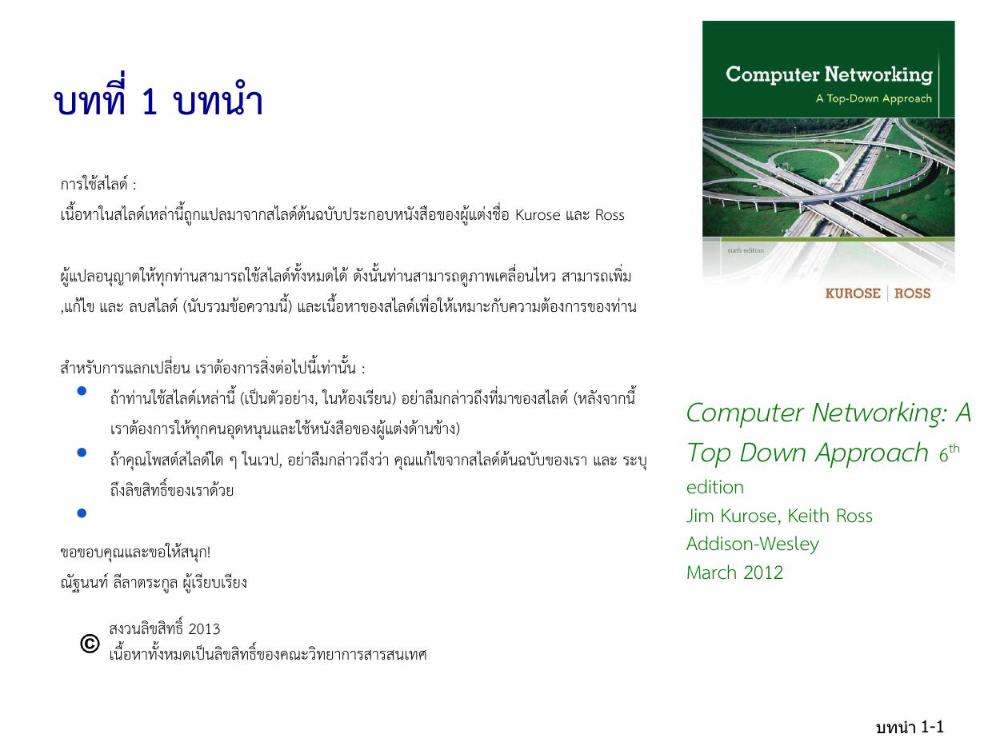
คลิกภาพเพื่อเปิดขยาย
อ่านข้อความต้นฉบับที่สกัดได้ (ไทย/อังกฤษตามไฟล์) บทที่ 1 บทนํา
การใช้สไลด์ :
เนื้อหาในสไลด์เหล่านี้ถูกแปลมาจากสไลด์ต้นฉบับประกอบหนังสือของผู้แต่งชื่อ Kurose และ Ross
ผู้แปลอนุญาตให้ทุกท่านสามารถใช้สไลด์ทั้งหมดได้ ดังนั้นท่านสามารถดูภาพเคลื่อนไหว สามารถเพิ่ม
,แก้ไข และ ลบสไลด์ (นับรวมข้อความนี้) และเนื้อหาของสไลด์เพื่อให้เหมาะกับความต้องการของท่าน
สาหรับการแลกเปลี่ยน เราต้องการสิ่งต่อไปนี้เท่านั้น :
• ถ้าท่านใช้สไลด์เหล่านี้ (เป็นตัวอย่าง, ในห้องเรียน) อย่าลืมกล่าวถึงที่มาของสไลด์ (หลังจากนี้
Computer Networking: A
เราต้องการให้ทุกคนอุดหนุนและใช้หนังสือของผู้แต่งด้านข้าง)
• ถ้าคุณโพสต์สไลด์ใด ๆ ในเวป, อย่าลืมกล่าวถึงว่า คุณแก้ไขจากสไลด์ต้นฉบับของเรา และ ระบุ Top Down Approach 6th
ถึงลิขสิทธิ์ของเราด้วย edition
• Jim Kurose, Keith Ross
ขอขอบคุณและขอให้สนุก! Addison-Wesley
ณัฐนนท์ ลีลาตระกูล ผู้เรียบเรียง March 2012
สงวนลิขสิทธิ์ 2013
เนื้อหาทั้งหมดเป็นลิขสิทธิ์ของคณะวิทยาการสารสนเทศ
บทนำ 1-1 ทบทวนภาษาไทย: 351 บท 1: Internet, Delay, Throughput และ Protocol Stack บทนำการสื่อสารข้อมูลและเครือข่าย แบบจำลองเครือข่าย OSI และ TCP/IP ข้อมูล สัญญาณ และข้อจำกัดของช่องสื่อสาร สื่อกลางส่งข้อมูล Switching และการส่งผ่านเครือข่าย Network Security: บริการและกลไก
กลับสารบัญ ↑ หน้า 2 — บทที่ 1: บทนํา ดูภาพต้นฉบับหน้า 2 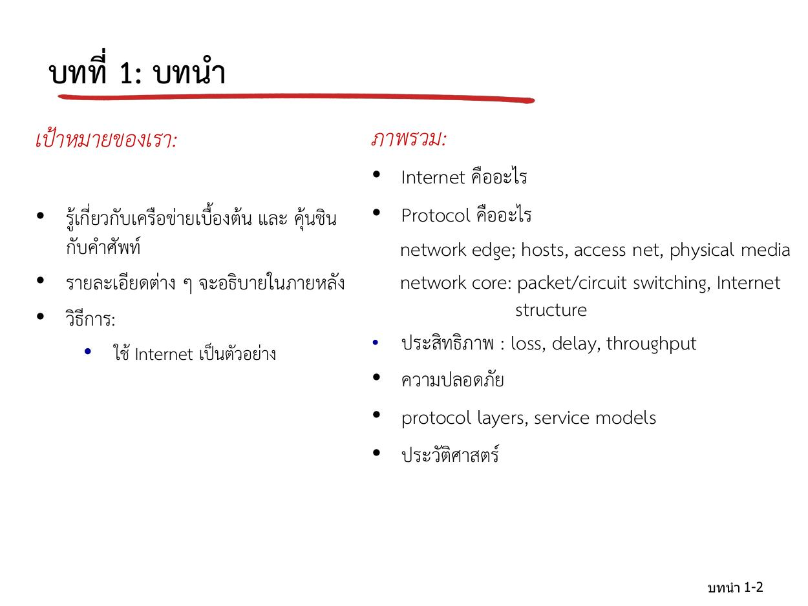
คลิกภาพเพื่อเปิดขยาย
อ่านข้อความต้นฉบับที่สกัดได้ (ไทย/อังกฤษตามไฟล์) บทที่ 1: บทนํา
เป้าหมายของเรา: ภาพรวม:
• Internet คืออะไร
• รู้เกี่ยวกับเครือข่ายเบื้องต้น และ คุ้นชิน • Protocol คืออะไร
กับคาศัพท์ network edge; hosts, access net, physical media
• รายละเอียดต่าง ๆ จะอธิบายในภายหลัง network core: packet/circuit switching, Internet
• วิธีการ: structure
• ประสิทธิภาพ : loss, delay, throughput
• ใช้ Internet เป็นตัวอย่าง
• ความปลอดภัย
• protocol layers, service models
• ประวัติศาสตร์
บทนำ 1-2 ทบทวนภาษาไทย: 351 บท 1: Internet, Delay, Throughput และ Protocol Stack บทนำการสื่อสารข้อมูลและเครือข่าย แบบจำลองเครือข่าย OSI และ TCP/IP ข้อมูล สัญญาณ และข้อจำกัดของช่องสื่อสาร สื่อกลางส่งข้อมูล Switching และการส่งผ่านเครือข่าย Network Security: บริการและกลไก
กลับสารบัญ ↑ หน้า 3 — บทที่ 1: แผนการสอน ดูภาพต้นฉบับหน้า 3 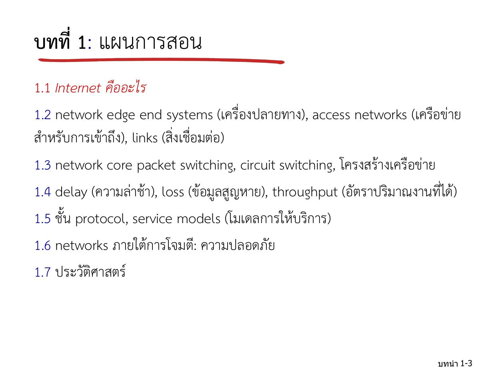
คลิกภาพเพื่อเปิดขยาย
อ่านข้อความต้นฉบับที่สกัดได้ (ไทย/อังกฤษตามไฟล์) บทที่ 1: แผนการสอน
1.1 Internet คืออะไร
1.2 network edge end systems (เครื่องปลายทาง), access networks (เครือข่าย
สาหรับการเข้าถึง), links (สิ่งเชื่อมต่อ)
1.3 network core packet switching, circuit switching, โครงสร้างเครือข่าย
1.4 delay (ความล่าช้า), loss (ข้อมูลสูญหาย), throughput (อัตราปริมาณงานที่ได้)
1.5 ชั้น protocol, service models (โมเดลการให้บริการ)
1.6 networks ภายใต้การโจมตี: ความปลอดภัย
1.7 ประวัติศาสตร์
บทนำ 1-3 ทบทวนภาษาไทย: 351 บท 1: Internet, Delay, Throughput และ Protocol Stack บทนำการสื่อสารข้อมูลและเครือข่าย แบบจำลองเครือข่าย OSI และ TCP/IP ข้อมูล สัญญาณ และข้อจำกัดของช่องสื่อสาร สื่อกลางส่งข้อมูล Switching และการส่งผ่านเครือข่าย Network Security: บริการและกลไก
กลับสารบัญ ↑ หน้า 4 — Internet คืออะไร: มุมมองในแง่ส่วนประกอบของ Internet ดูภาพต้นฉบับหน้า 4 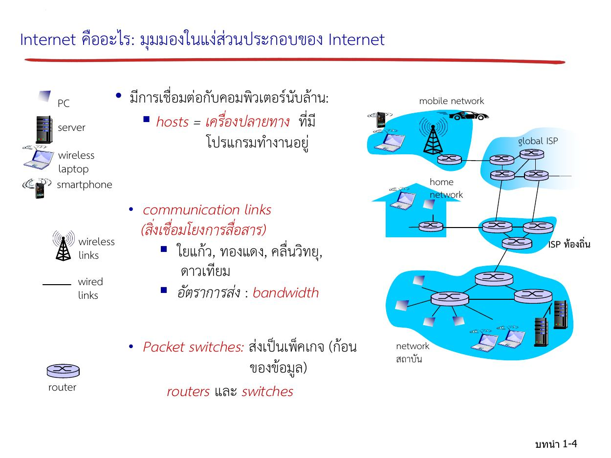
คลิกภาพเพื่อเปิดขยาย
อ่านข้อความต้นฉบับที่สกัดได้ (ไทย/อังกฤษตามไฟล์) Internet คืออะไร: มุมมองในแง่ส่วนประกอบของ Internet
PC • มีการเชื่อมต่อกับคอมพิวเตอร์นับล้าน: mobile network
server hosts = เครื่องปลายทาง ที่มี
โปรแกรมทางานอยู่ global ISP
wireless
laptop
smartphone home
network
• communication links
(สิ่งเชื่อมโยงการสื่อสาร)
wireless ISP ทองถิ่น
links ใยแก้ว, ทองแดง, คลื่นวิทยุ,
wired
ดาวเทียม
links อัตราการส่ง : bandwidth
• Packet switches: ส่งเป็นเพ็คเกจ (ก้อน network
สถาบัน
ของข้อมูล)
router routers และ switches
บทนำ 1-4 ทบทวนภาษาไทย: 351 บท 1: Internet, Delay, Throughput และ Protocol Stack บทนำการสื่อสารข้อมูลและเครือข่าย แบบจำลองเครือข่าย OSI และ TCP/IP ข้อมูล สัญญาณ และข้อจำกัดของช่องสื่อสาร สื่อกลางส่งข้อมูล Switching และการส่งผ่านเครือข่าย Network Security: บริการและกลไก
กลับสารบัญ ↑ หน้า 5 — เครื่องใช้อินเทอร์เน็ต ดูภาพต้นฉบับหน้า 5 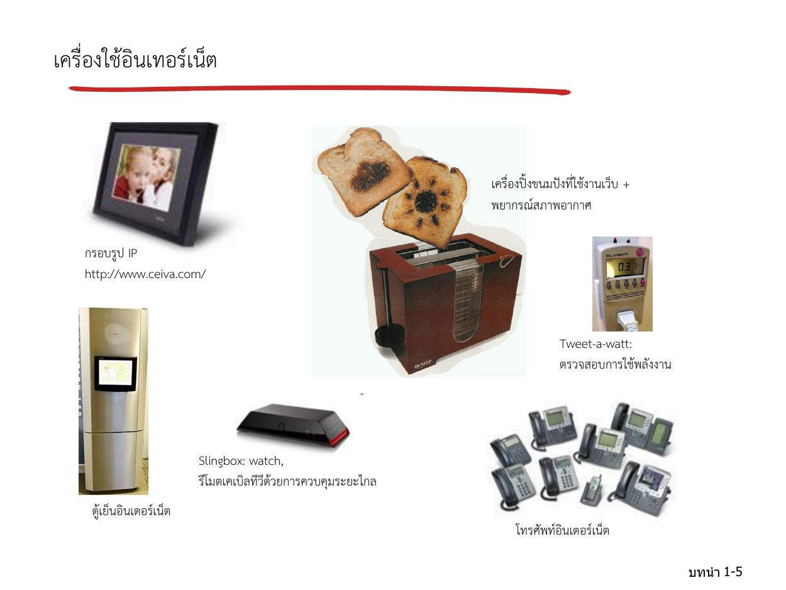
คลิกภาพเพื่อเปิดขยาย
อ่านข้อความต้นฉบับที่สกัดได้ (ไทย/อังกฤษตามไฟล์) เครื่องใช้อินเทอร์เน็ต
เครื่องปิ้งขนมปังที่ใช้งานเว็บ +
พยากรณ์สภาพอากาศ
กรอบรูป IP
http://www.ceiva.com/
Tweet-a-watt:
ตรวจสอบการใช้พลังงาน
Slingbox: watch,
รีโมตเคเบิลทีวีด้วยการควบคุมระยะไกล
ตู้เย็นอินเตอร์เน็ต
โทรศัพท์อินเตอร์เน็ต
บทนำ 1-5 ทบทวนภาษาไทย: 351 บท 1: Internet, Delay, Throughput และ Protocol Stack บทนำการสื่อสารข้อมูลและเครือข่าย แบบจำลองเครือข่าย OSI และ TCP/IP ข้อมูล สัญญาณ และข้อจำกัดของช่องสื่อสาร สื่อกลางส่งข้อมูล Switching และการส่งผ่านเครือข่าย Network Security: บริการและกลไก
กลับสารบัญ ↑ หน้า 6 — Internet คืออะไร: มุมมองในแง่ส่วนประกอบของ Internet ดูภาพต้นฉบับหน้า 6 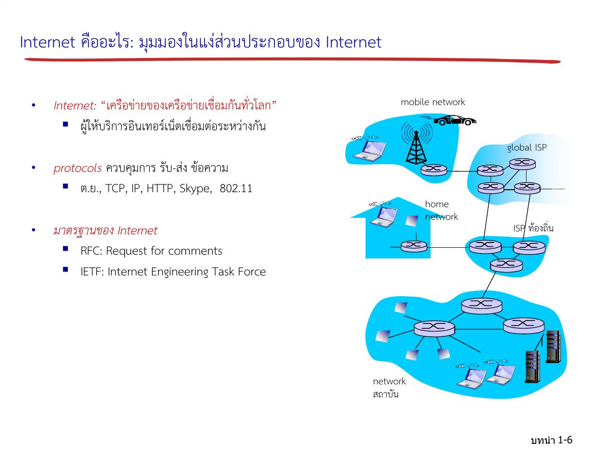
คลิกภาพเพื่อเปิดขยาย
อ่านข้อความต้นฉบับที่สกัดได้ (ไทย/อังกฤษตามไฟล์) Internet คืออะไร: มุมมองในแง่ส่วนประกอบของ Internet
• Internet: “เครือข่ายของเครือข่ายเชื่อมกันทั่วโลก” mobile network
ผู้ให้บริการอินเทอร์เน็ตเชื่อมต่อระหว่างกัน
global ISP
• protocols ควบคุมการ รับ-ส่ง ข้อความ
ต.ย., TCP, IP, HTTP, Skype, 802.11
home
network
• มาตรฐานของ Internet ISP ท้องถิ่น
RFC: Request for comments
IETF: Internet Engineering Task Force
network
สถาบัน
บทนำ 1-6 ทบทวนภาษาไทย: 351 บท 1: Internet, Delay, Throughput และ Protocol Stack บทนำการสื่อสารข้อมูลและเครือข่าย แบบจำลองเครือข่าย OSI และ TCP/IP ข้อมูล สัญญาณ และข้อจำกัดของช่องสื่อสาร สื่อกลางส่งข้อมูล Switching และการส่งผ่านเครือข่าย Network Security: บริการและกลไก
กลับสารบัญ ↑ หน้า 7 — Internet คืออะไร: มุมมองดานการใหบริการ ดูภาพต้นฉบับหน้า 7 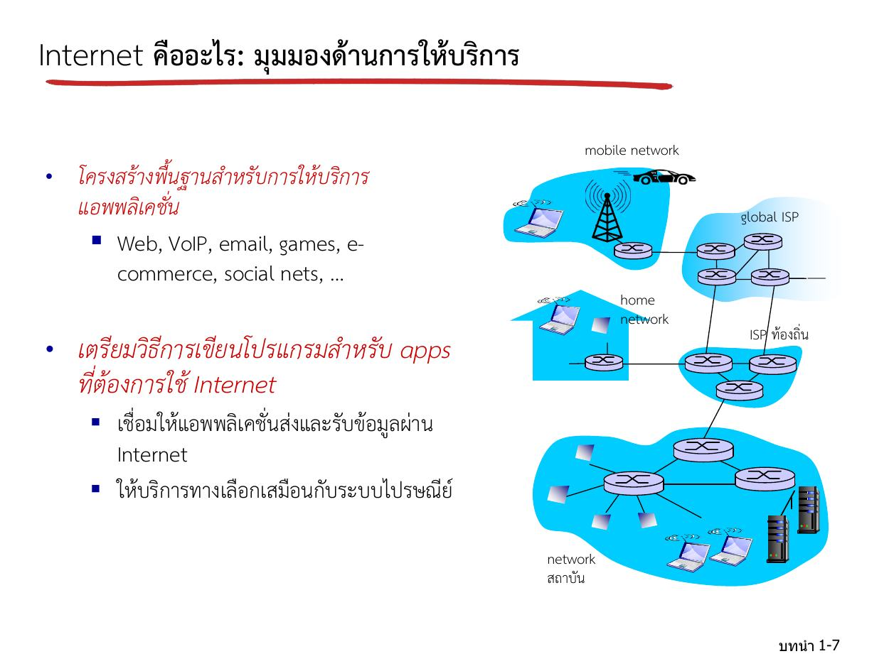
คลิกภาพเพื่อเปิดขยาย
อ่านข้อความต้นฉบับที่สกัดได้ (ไทย/อังกฤษตามไฟล์) Internet คืออะไร: มุมมองดานการใหบริการ
mobile network
• โครงสร้างพื้นฐานสาหรับการให้บริการ
แอพพลิเคชั่น global ISP
Web, VoIP, email, games, e-
commerce, social nets, …
home
network
ISP ท้องถิ่น
• เตรียมวิธีการเขียนโปรแกรมสาหรับ apps
ที่ต้องการใช้ Internet
เชื่อมให้แอพพลิเคชั่นส่งและรับข้อมูลผ่าน
Internet
ให้บริการทางเลือกเสมือนกับระบบไปรษณีย์
network
สถาบัน
บทนำ 1-7 ทบทวนภาษาไทย: 351 บท 1: Internet, Delay, Throughput และ Protocol Stack บทนำการสื่อสารข้อมูลและเครือข่าย แบบจำลองเครือข่าย OSI และ TCP/IP ข้อมูล สัญญาณ และข้อจำกัดของช่องสื่อสาร สื่อกลางส่งข้อมูล Switching และการส่งผ่านเครือข่าย Network Security: บริการและกลไก
กลับสารบัญ ↑ หน้า 8 — โปรโตคอล คืออะไร ดูภาพต้นฉบับหน้า 8 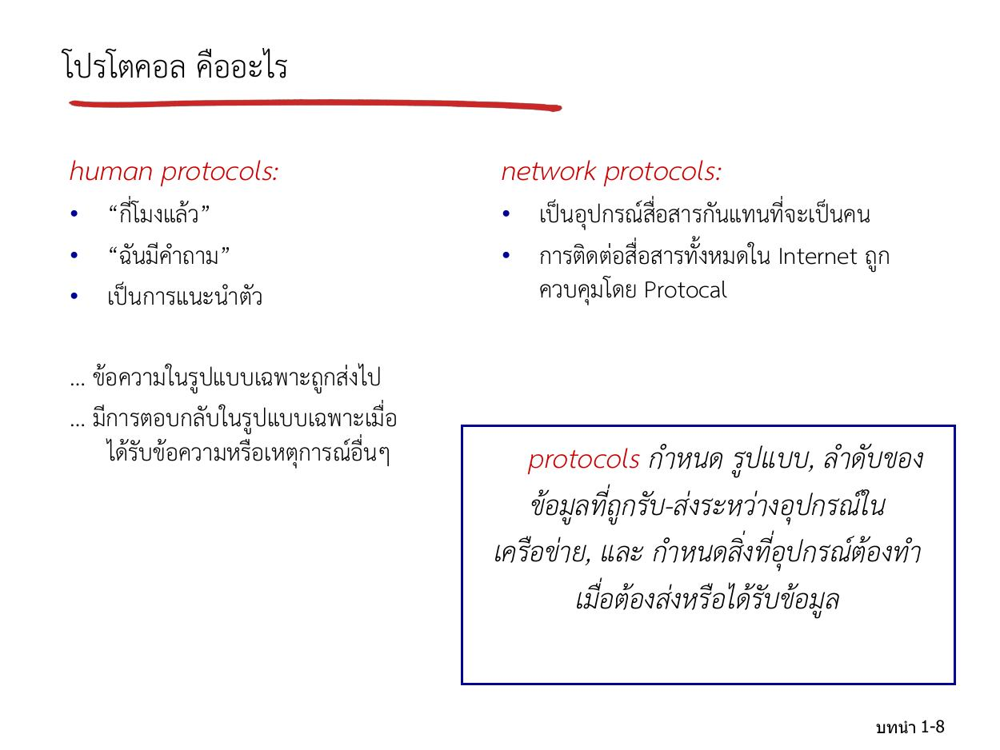
คลิกภาพเพื่อเปิดขยาย
อ่านข้อความต้นฉบับที่สกัดได้ (ไทย/อังกฤษตามไฟล์) โปรโตคอล คืออะไร
human protocols: network protocols:
• “กีโ่ มงแล้ว” • เป็นอุปกรณ์สื่อสารกันแทนที่จะเป็นคน
• “ฉันมีคาถาม” • การติดต่อสื่อสารทั้งหมดใน Internet ถูก
• เป็นการแนะนาตัว ควบคุมโดย Protocal
… ข้อความในรูปแบบเฉพาะถูกส่งไป
… มีการตอบกลับในรูปแบบเฉพาะเมื่อ
ได้รับข้อความหรือเหตุการณ์อื่นๆ protocols กาหนด รูปแบบ, ลาดับของ
ข้อมูลที่ถูกรับ-ส่งระหว่างอุปกรณ์ใน
เครือข่าย, และ กาหนดสิ่งที่อุปกรณ์ต้องทา
เมื่อต้องส่งหรือได้รับข้อมูล
บทนำ 1-8 ทบทวนภาษาไทย: 351 บท 1: Internet, Delay, Throughput และ Protocol Stack บทนำการสื่อสารข้อมูลและเครือข่าย แบบจำลองเครือข่าย OSI และ TCP/IP ข้อมูล สัญญาณ และข้อจำกัดของช่องสื่อสาร สื่อกลางส่งข้อมูล Switching และการส่งผ่านเครือข่าย Network Security: บริการและกลไก
กลับสารบัญ ↑ หน้า 9 — โปรโตคอลคืออะไร ดูภาพต้นฉบับหน้า 9 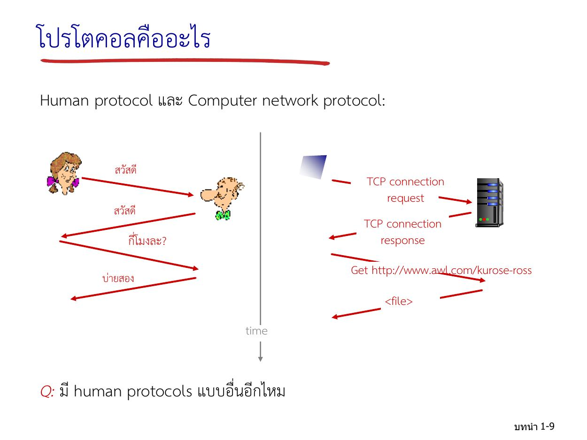
คลิกภาพเพื่อเปิดขยาย
อ่านข้อความต้นฉบับที่สกัดได้ (ไทย/อังกฤษตามไฟล์) โปรโตคอลคืออะไร
Human protocol และ Computer network protocol:
สวัสดี
TCP connection
request
สวัสดี
TCP connection
กี่โมงละ? response
บ่ายสอง
Get http://www.awl.com/kurose-ross
<file>
time
Q: มี human protocols แบบอื่นอีกไหม
บทนำ 1-9 ทบทวนภาษาไทย: 351 บท 1: Internet, Delay, Throughput และ Protocol Stack บทนำการสื่อสารข้อมูลและเครือข่าย แบบจำลองเครือข่าย OSI และ TCP/IP ข้อมูล สัญญาณ และข้อจำกัดของช่องสื่อสาร สื่อกลางส่งข้อมูล Switching และการส่งผ่านเครือข่าย Network Security: บริการและกลไก
กลับสารบัญ ↑ หน้า 10 — บทที่ 1: แผนการสอน ดูภาพต้นฉบับหน้า 10 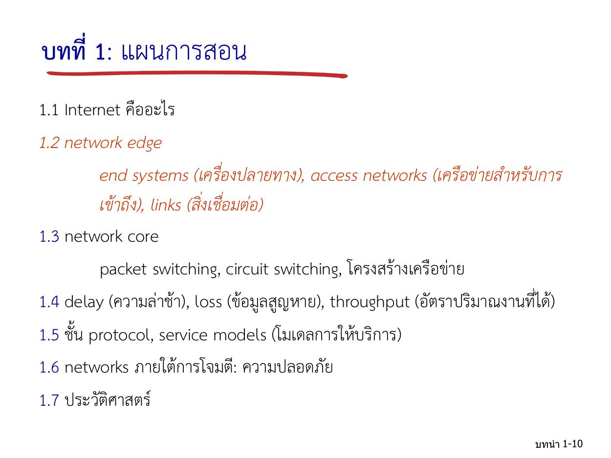
คลิกภาพเพื่อเปิดขยาย
อ่านข้อความต้นฉบับที่สกัดได้ (ไทย/อังกฤษตามไฟล์) บทที่ 1: แผนการสอน
1.1 Internet คืออะไร
1.2 network edge
end systems (เครื่องปลายทาง), access networks (เครือข่ายสาหรับการ
เข้าถึง), links (สิ่งเชื่อมต่อ)
1.3 network core
packet switching, circuit switching, โครงสร้างเครือข่าย
1.4 delay (ความล่าช้า), loss (ข้อมูลสูญหาย), throughput (อัตราปริมาณงานที่ได้)
1.5 ชั้น protocol, service models (โมเดลการให้บริการ)
1.6 networks ภายใต้การโจมตี: ความปลอดภัย
1.7 ประวัติศาสตร์
บทนำ 1-10 ทบทวนภาษาไทย: 351 บท 1: Internet, Delay, Throughput และ Protocol Stack บทนำการสื่อสารข้อมูลและเครือข่าย แบบจำลองเครือข่าย OSI และ TCP/IP ข้อมูล สัญญาณ และข้อจำกัดของช่องสื่อสาร สื่อกลางส่งข้อมูล Switching และการส่งผ่านเครือข่าย Network Security: บริการและกลไก
กลับสารบัญ ↑ หน้า 11 — โครงสร้างเน็ตเวิร์คประกอบไปด้วย: ดูภาพต้นฉบับหน้า 11 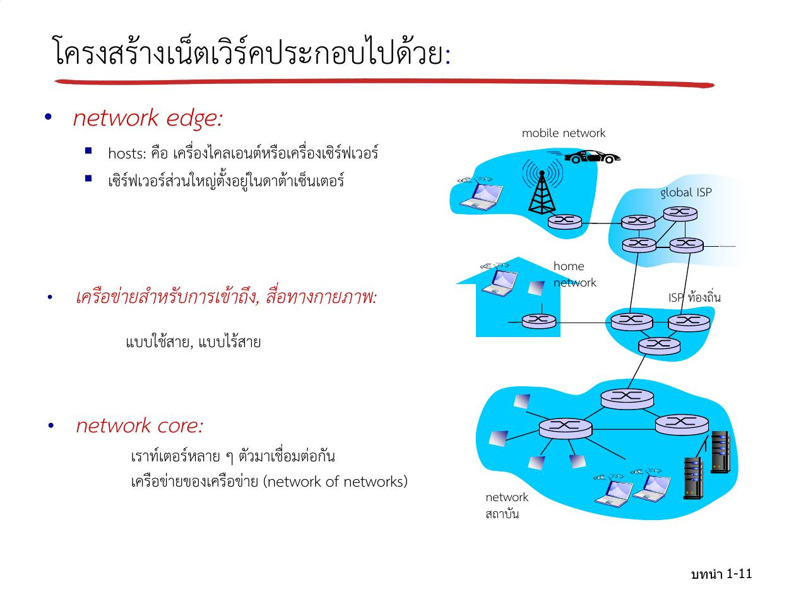
คลิกภาพเพื่อเปิดขยาย
อ่านข้อความต้นฉบับที่สกัดได้ (ไทย/อังกฤษตามไฟล์) โครงสร้างเน็ตเวิร์คประกอบไปด้วย:
• network edge: mobile network
hosts: คือ เครื่องไคลเอนต์หรือเครื่องเซิร์ฟเวอร์
เซิร์ฟเวอร์ส่วนใหญ่ตั้งอยู่ในดาต้าเซ็นเตอร์ global ISP
home
network
• เครือข่ายสาหรับการเข้าถึง, สื่อทางกายภาพ: ISP ท้องถิ่น
แบบใช้สาย, แบบไร้สาย
• network core:
เราท์เตอร์หลาย ๆ ตัวมาเชื่อมต่อกัน
เครือข่ายของเครือข่าย (network of networks)
network
สถาบัน
บทนำ 1-11 ทบทวนภาษาไทย: 351 บท 1: Internet, Delay, Throughput และ Protocol Stack บทนำการสื่อสารข้อมูลและเครือข่าย แบบจำลองเครือข่าย OSI และ TCP/IP ข้อมูล สัญญาณ และข้อจำกัดของช่องสื่อสาร สื่อกลางส่งข้อมูล Switching และการส่งผ่านเครือข่าย Network Security: บริการและกลไก
กลับสารบัญ ↑ หน้า 12 — เครือข่ายสาหรับการเข้าถึง และ สื่อทางกายภาพ ดูภาพต้นฉบับหน้า 12 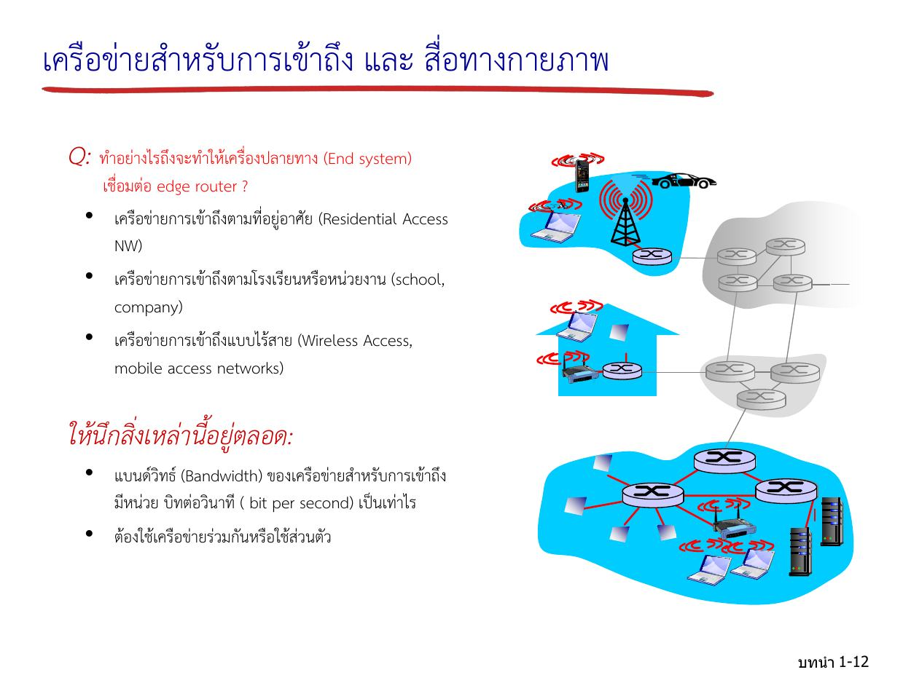
คลิกภาพเพื่อเปิดขยาย
อ่านข้อความต้นฉบับที่สกัดได้ (ไทย/อังกฤษตามไฟล์) เครือข่ายสาหรับการเข้าถึง และ สื่อทางกายภาพ
Q: ทาอย่างไรถึงจะทาให้เครื่องปลายทาง (End system)
เชื่อมต่อ edge router ?
• เครือข่ายการเข้าถึงตามที่อยู่อาศัย (Residential Access
NW)
• เครือข่ายการเข้าถึงตามโรงเรียนหรือหน่วยงาน (school,
company)
• เครือข่ายการเข้าถึงแบบไร้สาย (Wireless Access,
mobile access networks)
ให้นึกสิ่งเหล่านี้อยู่ตลอด:
• แบนด์วิทธ์ (Bandwidth) ของเครือข่ายสาหรับการเข้าถึง
มีหน่วย บิทต่อวินาที ( bit per second) เป็นเท่าไร
• ต้องใช้เครือข่ายร่วมกันหรือใช้ส่วนตัว
บทนำ 1-12 ทบทวนภาษาไทย: 351 บท 1: Internet, Delay, Throughput และ Protocol Stack บทนำการสื่อสารข้อมูลและเครือข่าย แบบจำลองเครือข่าย OSI และ TCP/IP ข้อมูล สัญญาณ และข้อจำกัดของช่องสื่อสาร สื่อกลางส่งข้อมูล Switching และการส่งผ่านเครือข่าย Network Security: บริการและกลไก
กลับสารบัญ ↑ หน้า 13 — Access net: Digital Subscriber Line (DSL) ดูภาพต้นฉบับหน้า 13 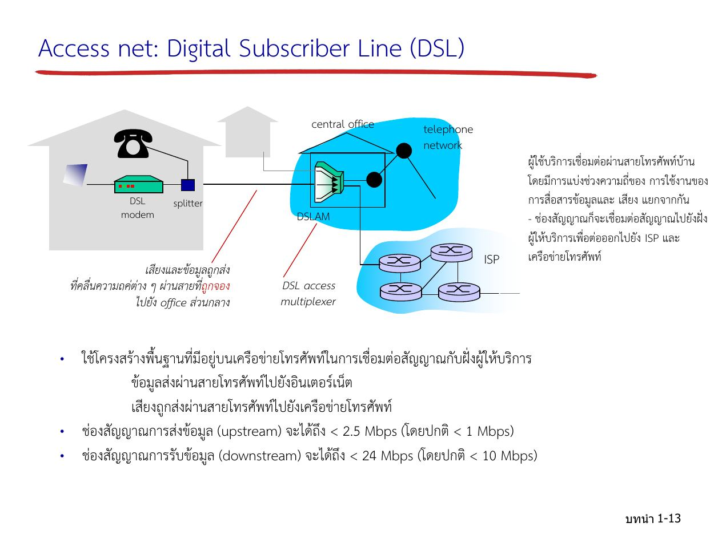
คลิกภาพเพื่อเปิดขยาย
อ่านข้อความต้นฉบับที่สกัดได้ (ไทย/อังกฤษตามไฟล์) Access net: Digital Subscriber Line (DSL)
central office telephone
network
ผู้ใช้บริการเชื่อมต่อผ่านสายโทรศัพท์บ้าน
โดยมีการแบ่งช่วงความถี่ของ การใช้งานของ
DSL splitter การสื่อสารข้อมูลและ เสียง แยกจากกัน
modem DSLAM - ช่องสัญญาณก็จะเชื่อมต่อสัญญาณไปยังฝั่ง
ผู้ให้บริการเพื่อต่อออกไปยัง ISP และ
ISP เครือข่ายโทรศัพท์
เสียงและข้อมูลถูกส่ง
ที่คลื่นความถค่ต่าง ๆ ผ่านสายที่ถูกจอง DSL access
ไปยัง office ส่วนกลาง multiplexer
• ใช้โครงสร้างพื้นฐานที่มีอยู่บนเครือข่ายโทรศัพท์ในการเชื่อมต่อสัญญาณกับฝั่งผู้ให้บริการ
ข้อมูลส่งผ่านสายโทรศัพท์ไปยังอินเตอร์เน็ต
เสียงถูกส่งผ่านสายโทรศัพท์ไปยังเครือข่ายโทรศัพท์
• ช่องสัญญาณการส่งข้อมูล (upstream) จะได้ถึง < 2.5 Mbps (โดยปกติ < 1 Mbps)
• ช่องสัญญาณการรับข้อมูล (downstream) จะได้ถึง < 24 Mbps (โดยปกติ < 10 Mbps)
บทนำ 1-13 ทบทวนภาษาไทย: 351 บท 1: Internet, Delay, Throughput และ Protocol Stack บทนำการสื่อสารข้อมูลและเครือข่าย แบบจำลองเครือข่าย OSI และ TCP/IP ข้อมูล สัญญาณ และข้อจำกัดของช่องสื่อสาร สื่อกลางส่งข้อมูล Switching และการส่งผ่านเครือข่าย Network Security: บริการและกลไก
กลับสารบัญ ↑ หน้า 14 — Access net: cable network ดูภาพต้นฉบับหน้า 14 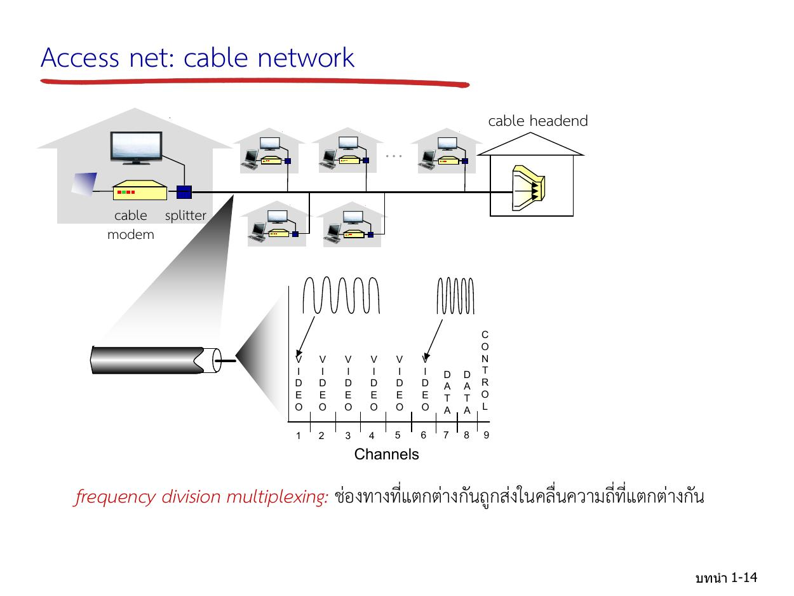
คลิกภาพเพื่อเปิดขยาย
อ่านข้อความต้นฉบับที่สกัดได้ (ไทย/อังกฤษตามไฟล์) Access net: cable network
cable headend
…
cable splitter
modem
C
O
V V V V V V N
I I I I I I D D T
D D D D D D A A R
E E E E E E T T O
O O O O O O A A L
1 2 3 4 5 6 7 8 9
Channels
frequency division multiplexing: ช่องทางที่แตกต่างกันถูกส่งในคลื่นความถี่ที่แตกต่างกัน
บทนำ 1-14 ทบทวนภาษาไทย: 351 บท 1: Internet, Delay, Throughput และ Protocol Stack บทนำการสื่อสารข้อมูลและเครือข่าย แบบจำลองเครือข่าย OSI และ TCP/IP ข้อมูล สัญญาณ และข้อจำกัดของช่องสื่อสาร สื่อกลางส่งข้อมูล Switching และการส่งผ่านเครือข่าย Network Security: บริการและกลไก
กลับสารบัญ ↑ หน้า 15 — Access net: cable network ดูภาพต้นฉบับหน้า 15 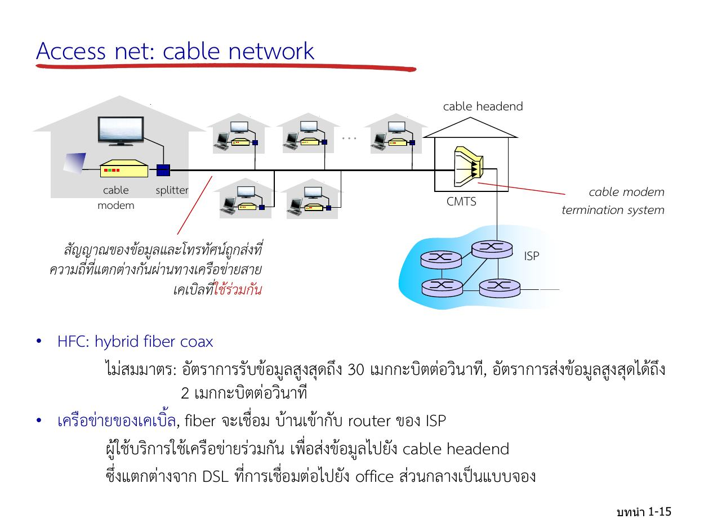
คลิกภาพเพื่อเปิดขยาย
อ่านข้อความต้นฉบับที่สกัดได้ (ไทย/อังกฤษตามไฟล์) Access net: cable network
cable headend
…
cable splitter cable modem
modem CMTS termination system
สัญญาณของข้อมูลและโทรทัศน์ถกู ส่งที่ ISP
ความถี่ที่แตกต่างกันผ่านทางเครือข่ายสาย
เคเบิลที่ใช้ร่วมกัน
• HFC: hybrid fiber coax
ไม่สมมาตร: อัตราการรับข้อมูลสูงสุดถึง 30 เมกกะบิตต่อวินาที, อัตราการส่งข้อมูลสูงสุดได้ถึง
2 เมกกะบิตต่อวินาที
• เครือข่ายของเคเบิ้ล, fiber จะเชื่อม บ้านเข้ากับ router ของ ISP
ผู้ใช้บริการใช้เครือข่ายร่วมกัน เพื่อส่งข้อมูลไปยัง cable headend
ซึ่งแตกต่างจาก DSL ที่การเชื่อมต่อไปยัง office ส่วนกลางเป็นแบบจอง
บทนำ 1-15 ทบทวนภาษาไทย: 351 บท 1: Internet, Delay, Throughput และ Protocol Stack บทนำการสื่อสารข้อมูลและเครือข่าย แบบจำลองเครือข่าย OSI และ TCP/IP ข้อมูล สัญญาณ และข้อจำกัดของช่องสื่อสาร สื่อกลางส่งข้อมูล Switching และการส่งผ่านเครือข่าย Network Security: บริการและกลไก
กลับสารบัญ ↑ หน้า 16 — Access net: เครือข่ายในบ้าน ดูภาพต้นฉบับหน้า 16 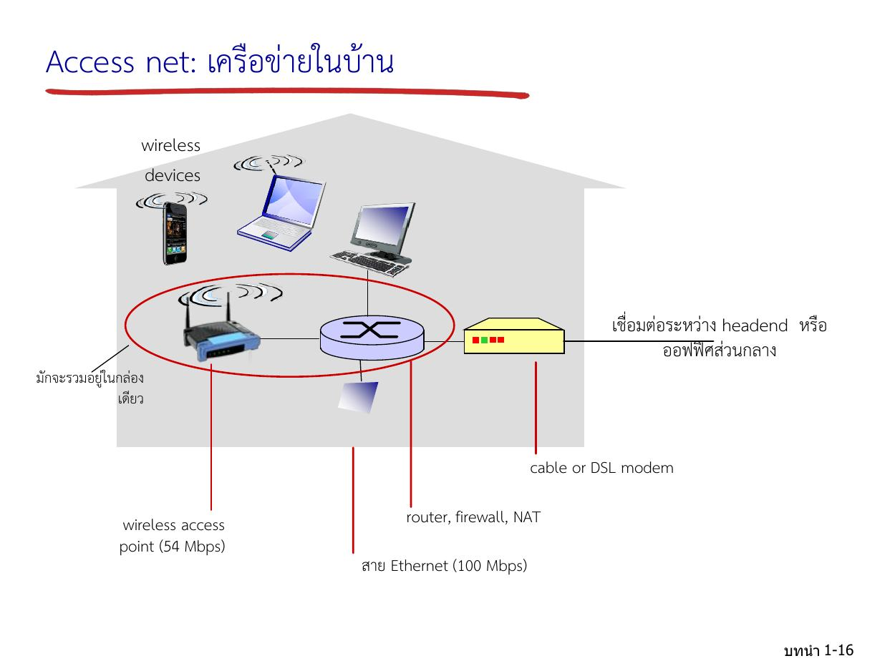
คลิกภาพเพื่อเปิดขยาย
อ่านข้อความต้นฉบับที่สกัดได้ (ไทย/อังกฤษตามไฟล์) Access net: เครือข่ายในบ้าน
wireless
devices
เชื่อมต่อระหว่าง headend หรือ
ออฟฟิศส่วนกลาง
มักจะรวมอยู่ในกล่อง
เดียว
cable or DSL modem
wireless access router, firewall, NAT
point (54 Mbps)
สาย Ethernet (100 Mbps)
บทนำ 1-16 ทบทวนภาษาไทย: 351 บท 1: Internet, Delay, Throughput และ Protocol Stack บทนำการสื่อสารข้อมูลและเครือข่าย แบบจำลองเครือข่าย OSI และ TCP/IP ข้อมูล สัญญาณ และข้อจำกัดของช่องสื่อสาร สื่อกลางส่งข้อมูล Switching และการส่งผ่านเครือข่าย Network Security: บริการและกลไก
กลับสารบัญ ↑ หน้า 17 — การเชื่อมต่อเครื่อข่ายระดับองค์กร (Ethernet) ดูภาพต้นฉบับหน้า 17 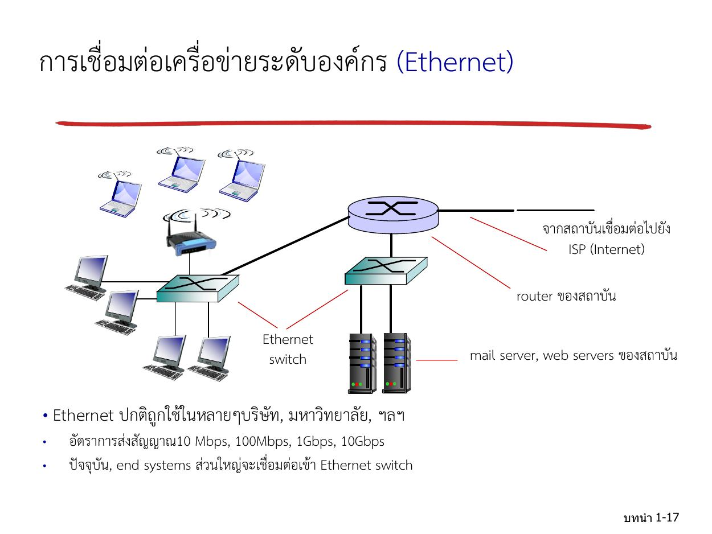
คลิกภาพเพื่อเปิดขยาย
อ่านข้อความต้นฉบับที่สกัดได้ (ไทย/อังกฤษตามไฟล์) การเชื่อมต่อเครื่อข่ายระดับองค์กร (Ethernet)
จากสถาบันเชื่อมต่อไปยัง
ISP (Internet)
router ของสถาบัน
Ethernet
switch mail server, web servers ของสถาบัน
• Ethernet ปกติถูกใช้ในหลายๆบริษัท, มหาวิทยาลัย, ฯลฯ
• อัตราการส่งสัญญาณ10 Mbps, 100Mbps, 1Gbps, 10Gbps
• ปัจจุบัน, end systems ส่วนใหญ่จะเชื่อมต่อเข้า Ethernet switch
บทนำ 1-17 ทบทวนภาษาไทย: 351 บท 1: Internet, Delay, Throughput และ Protocol Stack บทนำการสื่อสารข้อมูลและเครือข่าย แบบจำลองเครือข่าย OSI และ TCP/IP ข้อมูล สัญญาณ และข้อจำกัดของช่องสื่อสาร สื่อกลางส่งข้อมูล Switching และการส่งผ่านเครือข่าย Network Security: บริการและกลไก
กลับสารบัญ ↑ หน้า 18 — เครือข่ายการเชื่อมต่อแบบไร้สาย ดูภาพต้นฉบับหน้า 18 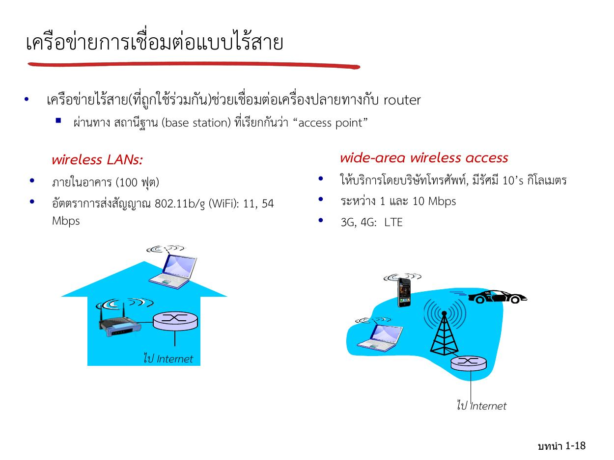
คลิกภาพเพื่อเปิดขยาย
อ่านข้อความต้นฉบับที่สกัดได้ (ไทย/อังกฤษตามไฟล์) เครือข่ายการเชื่อมต่อแบบไร้สาย
• เครือข่ายไร้สาย(ที่ถูกใช้ร่วมกัน)ช่วยเชื่อมต่อเครื่องปลายทางกับ router
ผ่านทาง สถานีฐาน (base station) ที่เรียกกันว่า “access point”
wireless LANs: wide-area wireless access
• ภายในอาคาร (100 ฟุต) • ให้บริการโดยบริษัทโทรศัพท์, มีรัศมี 10’s กิโลเมตร
• อัตตราการส่งสัญญาณ 802.11b/g (WiFi): 11, 54 • ระหว่าง 1 และ 10 Mbps
Mbps • 3G, 4G: LTE
ไป Internet
ไป Internet
บทนำ 1-18 ทบทวนภาษาไทย: 351 บท 1: Internet, Delay, Throughput และ Protocol Stack บทนำการสื่อสารข้อมูลและเครือข่าย แบบจำลองเครือข่าย OSI และ TCP/IP ข้อมูล สัญญาณ และข้อจำกัดของช่องสื่อสาร สื่อกลางส่งข้อมูล Switching และการส่งผ่านเครือข่าย Network Security: บริการและกลไก
กลับสารบัญ ↑ หน้า 19 — Base Station ดูภาพต้นฉบับหน้า 19 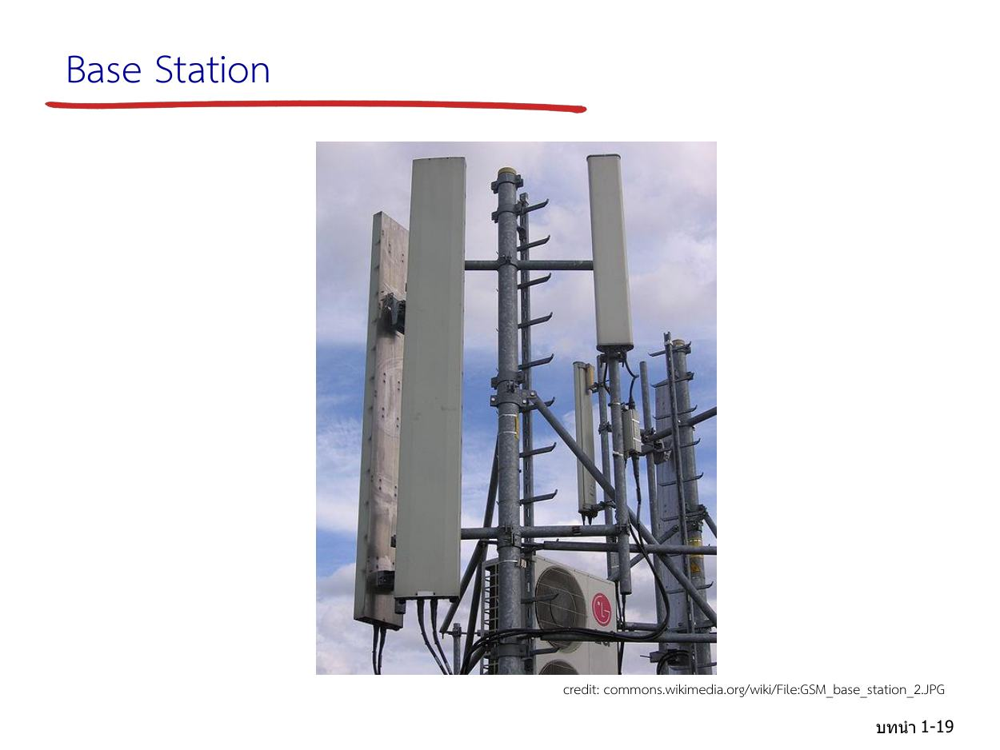
คลิกภาพเพื่อเปิดขยาย
อ่านข้อความต้นฉบับที่สกัดได้ (ไทย/อังกฤษตามไฟล์) Base Station
credit: commons.wikimedia.org/wiki/File:GSM_base_station_2.JPG
บทนำ 1-19 ทบทวนภาษาไทย: 351 บท 1: Internet, Delay, Throughput และ Protocol Stack บทนำการสื่อสารข้อมูลและเครือข่าย แบบจำลองเครือข่าย OSI และ TCP/IP ข้อมูล สัญญาณ และข้อจำกัดของช่องสื่อสาร สื่อกลางส่งข้อมูล Switching และการส่งผ่านเครือข่าย Network Security: บริการและกลไก
กลับสารบัญ ↑ หน้า 20 — Host: ส่ง packets ของข้อมูล ดูภาพต้นฉบับหน้า 20 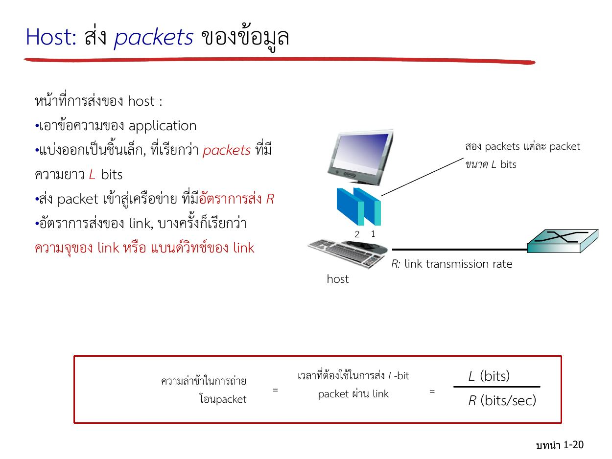
คลิกภาพเพื่อเปิดขยาย
อ่านข้อความต้นฉบับที่สกัดได้ (ไทย/อังกฤษตามไฟล์) Host: ส่ง packets ของข้อมูล
หน้าทีก่ ารส่งของ host :
•เอาข้อความของ application
•แบ่งออกเป็นชิ้นเล็ก, ที่เรียกว่า packets ที่มี สอง packets แต่ละ packet
ขนาด L bits
ความยาว L bits
•ส่ง packet เข้าสูเ่ ครือข่าย ที่มอ
ี ัตราการส่ง R
•อัตราการส่งของ link, บางครั้งก็เรียกว่า
2 1
ความจุของ link หรือ แบนด์วิทช์ของ link
R: link transmission rate
host
ความล่าช้าในการถ่าย เวลาที่ต้องใช้ในการส่ง L-bit L (bits)
= packet ผ่าน link =
โอนpacket R (bits/sec)
บทนำ 1-20 ทบทวนภาษาไทย: 351 บท 1: Internet, Delay, Throughput และ Protocol Stack บทนำการสื่อสารข้อมูลและเครือข่าย แบบจำลองเครือข่าย OSI และ TCP/IP ข้อมูล สัญญาณ และข้อจำกัดของช่องสื่อสาร สื่อกลางส่งข้อมูล Switching และการส่งผ่านเครือข่าย Network Security: บริการและกลไก
กลับสารบัญ ↑ หน้า 21 — สื่อทางกายภาพ ดูภาพต้นฉบับหน้า 21 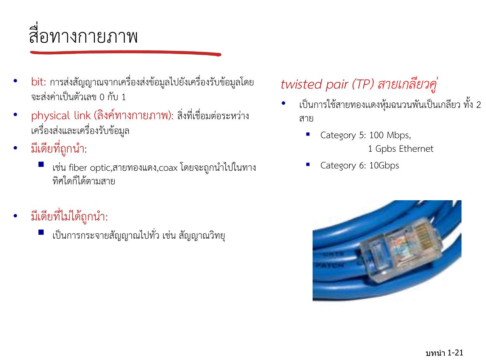
คลิกภาพเพื่อเปิดขยาย
อ่านข้อความต้นฉบับที่สกัดได้ (ไทย/อังกฤษตามไฟล์) สื่อทางกายภาพ
• bit: การส่งสัญญาณจากเครื่องส่งข้อมูลไปยังเครื่องรับข้อมูลโดย twisted pair (TP) สายเกลียวคู่
จะส่งค่าเป็นตัวเลข 0 กับ 1
• เป็นการใช้สายทองเเดงหุ้มฉนวนพันเป็นเกลียว ทั้ง 2
• physical link (ลิงค์ทางกายภาพ): สิ่งที่เชื่อมต่อระหว่าง สาย
เครื่องส่งและเครื่องรับข้อมูล Category 5: 100 Mbps,
• มีเดียที่ถูกนา: 1 Gpbs Ethernet
เช่น fiber optic,สายทองแดง,coax โดยจะถูกนาไปในทาง Category 6: 10Gbps
ทิศใดก็ได้ตามสาย
• มีเดียที่ไม่ได้ถูกนา:
เป็นการกระจายสัญญาณไปทั่ว เช่น สัญญาณวิทยุ
บทนำ 1-21 ทบทวนภาษาไทย: 351 บท 1: Internet, Delay, Throughput และ Protocol Stack บทนำการสื่อสารข้อมูลและเครือข่าย แบบจำลองเครือข่าย OSI และ TCP/IP ข้อมูล สัญญาณ และข้อจำกัดของช่องสื่อสาร สื่อกลางส่งข้อมูล Switching และการส่งผ่านเครือข่าย Network Security: บริการและกลไก
กลับสารบัญ ↑ หน้า 22 — Unshielded twisted pair (UTP) ดูภาพต้นฉบับหน้า 22 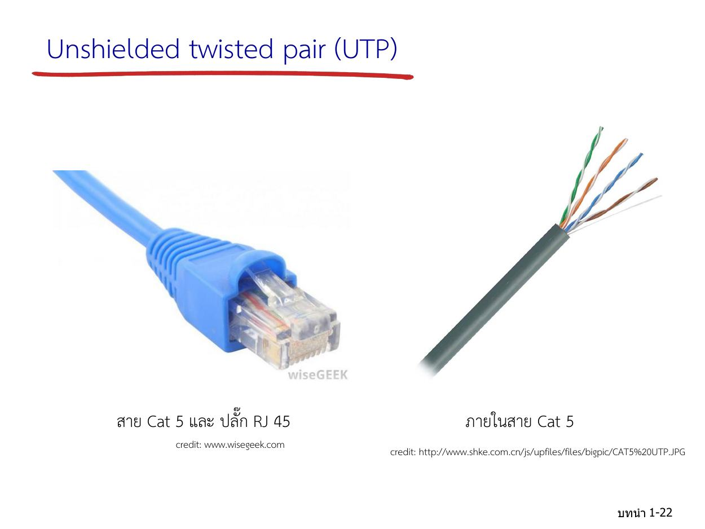
คลิกภาพเพื่อเปิดขยาย
อ่านข้อความต้นฉบับที่สกัดได้ (ไทย/อังกฤษตามไฟล์) Unshielded twisted pair (UTP)
สาย Cat 5 และ ปลั๊ก RJ 45 ภายในสาย Cat 5
credit: www.wisegeek.com
credit: http://www.shke.com.cn/js/upfiles/files/bigpic/CAT5%20UTP.JPG
บทนำ 1-22 ทบทวนภาษาไทย: 351 บท 1: Internet, Delay, Throughput และ Protocol Stack บทนำการสื่อสารข้อมูลและเครือข่าย แบบจำลองเครือข่าย OSI และ TCP/IP ข้อมูล สัญญาณ และข้อจำกัดของช่องสื่อสาร สื่อกลางส่งข้อมูล Switching และการส่งผ่านเครือข่าย Network Security: บริการและกลไก
กลับสารบัญ ↑ หน้า 23 — Physical media: สาย coax, สาย fiber ดูภาพต้นฉบับหน้า 23 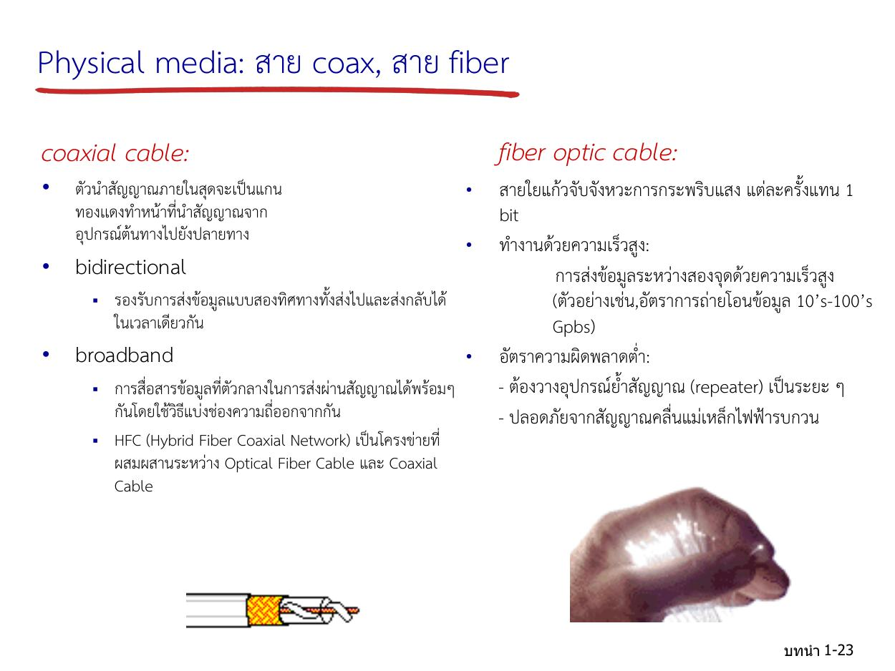
คลิกภาพเพื่อเปิดขยาย
อ่านข้อความต้นฉบับที่สกัดได้ (ไทย/อังกฤษตามไฟล์) Physical media: สาย coax, สาย fiber
coaxial cable: fiber optic cable:
• ตัวนาสัญญาณภายในสุดจะเป็นแกน • สายใยแก้วจับจังหวะการกระพริบแสง แต่ละครั้งแทน 1
ทองเเดงทาหน้าที่นาสัญญาณจาก bit
อุปกรณ์ต้นทางไปยังปลายทาง
• ทางานด้วยความเร็วสูง:
• bidirectional การส่งข้อมูลระหว่างสองจุดด้วยความเร็วสูง
รองรับการส่งข้อมูลแบบสองทิศทางทั้งส่งไปและส่งกลับได้ (ตัวอย่างเช่น,อัตราการถ่ายโอนข้อมูล 10’s-100’s
ในเวลาเดียวกัน Gpbs)
• broadband • อัตราความผิดพลาดต่า:
การสื่อสารข้อมูลที่ตัวกลางในการส่งผ่านสัญญาณได้พร้อมๆ - ต้องวางอุปกรณ์ย้าสัญญาณ (repeater) เป็นระยะ ๆ
กันโดยใช้วิธีแบ่งช่องความถี่ออกจากกัน - ปลอดภัยจากสัญญาณคลื่นแม่เหล็กไฟฟ้ารบกวน
HFC (Hybrid Fiber Coaxial Network) เป็นโครงข่ายที่
ผสมผสานระหว่าง Optical Fiber Cable และ Coaxial
Cable
บทนำ 1-23 ทบทวนภาษาไทย: 351 บท 1: Internet, Delay, Throughput และ Protocol Stack บทนำการสื่อสารข้อมูลและเครือข่าย แบบจำลองเครือข่าย OSI และ TCP/IP ข้อมูล สัญญาณ และข้อจำกัดของช่องสื่อสาร สื่อกลางส่งข้อมูล Switching และการส่งผ่านเครือข่าย Network Security: บริการและกลไก
กลับสารบัญ ↑ หน้า 24 — Co-axial ดูภาพต้นฉบับหน้า 24 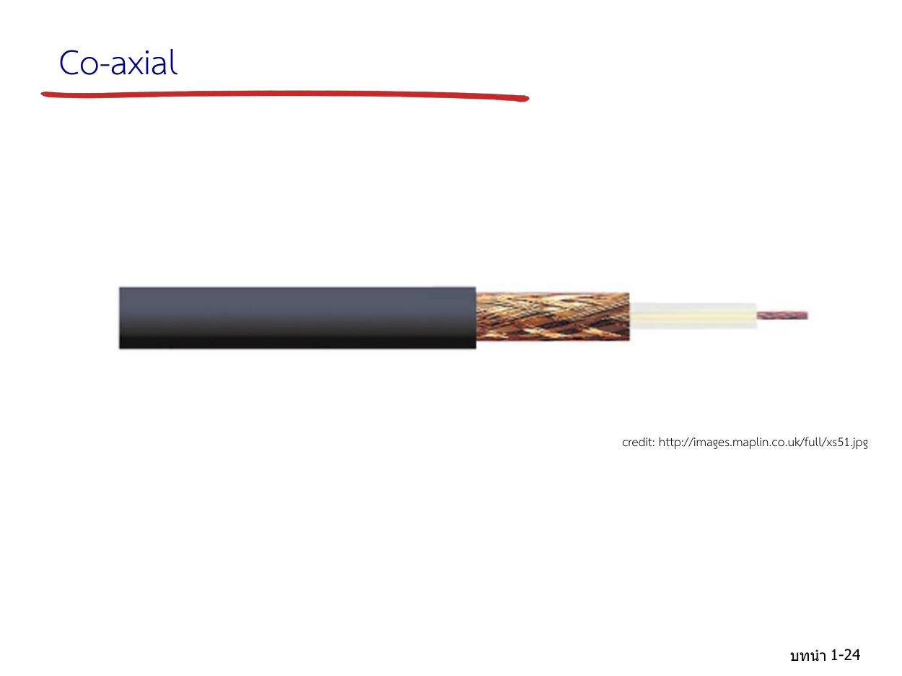
คลิกภาพเพื่อเปิดขยาย
อ่านข้อความต้นฉบับที่สกัดได้ (ไทย/อังกฤษตามไฟล์) Co-axial
credit: http://images.maplin.co.uk/full/xs51.jpg
บทนำ 1-24 ทบทวนภาษาไทย: 351 บท 1: Internet, Delay, Throughput และ Protocol Stack บทนำการสื่อสารข้อมูลและเครือข่าย แบบจำลองเครือข่าย OSI และ TCP/IP ข้อมูล สัญญาณ และข้อจำกัดของช่องสื่อสาร สื่อกลางส่งข้อมูล Switching และการส่งผ่านเครือข่าย Network Security: บริการและกลไก
กลับสารบัญ ↑ หน้า 25 — Physical media: คลื่นวิทยุ ดูภาพต้นฉบับหน้า 25 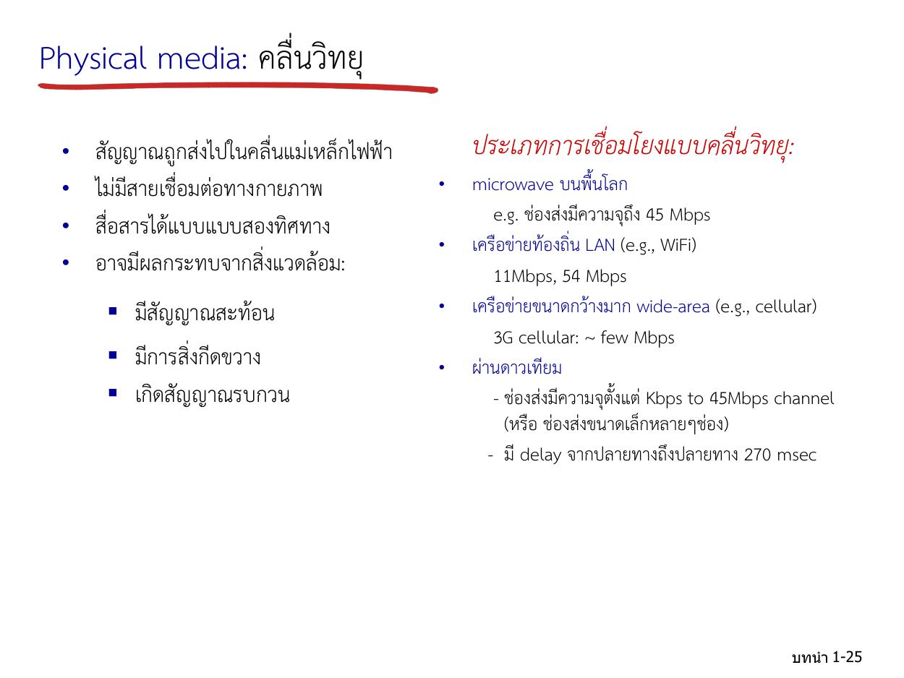
คลิกภาพเพื่อเปิดขยาย
อ่านข้อความต้นฉบับที่สกัดได้ (ไทย/อังกฤษตามไฟล์) Physical media: คลื่นวิทยุ
• สัญญาณถูกส่งไปในคลื่นแม่เหล็กไฟฟ้า ประเภทการเชื่อมโยงแบบคลื่นวิทยุ:
• ไม่มสี ายเชื่อมต่อทางกายภาพ • microwave บนพื้นโลก
e.g. ช่องส่งมีความจุถึง 45 Mbps
• สื่อสารได้แบบแบบสองทิศทาง
• เครือข่ายท้องถิ่น LAN (e.g., WiFi)
• อาจมีผลกระทบจากสิ่งแวดล้อม: 11Mbps, 54 Mbps
มีสัญญาณสะท้อน • เครือข่ายขนาดกว้างมาก wide-area (e.g., cellular)
3G cellular: ~ few Mbps
มีการสิ่งกีดขวาง • ผ่านดาวเทียม
เกิดสัญญาณรบกวน - ช่องส่งมีความจุตั้งแต่ Kbps to 45Mbps channel
(หรือ ช่องส่งขนาดเล็กหลายๆช่อง)
- มี delay จากปลายทางถึงปลายทาง 270 msec
บทนำ 1-25 ทบทวนภาษาไทย: 351 บท 1: Internet, Delay, Throughput และ Protocol Stack บทนำการสื่อสารข้อมูลและเครือข่าย แบบจำลองเครือข่าย OSI และ TCP/IP ข้อมูล สัญญาณ และข้อจำกัดของช่องสื่อสาร สื่อกลางส่งข้อมูล Switching และการส่งผ่านเครือข่าย Network Security: บริการและกลไก
กลับสารบัญ ↑ หน้า 26 — บทที่ 1: แผนการสอน ดูภาพต้นฉบับหน้า 26 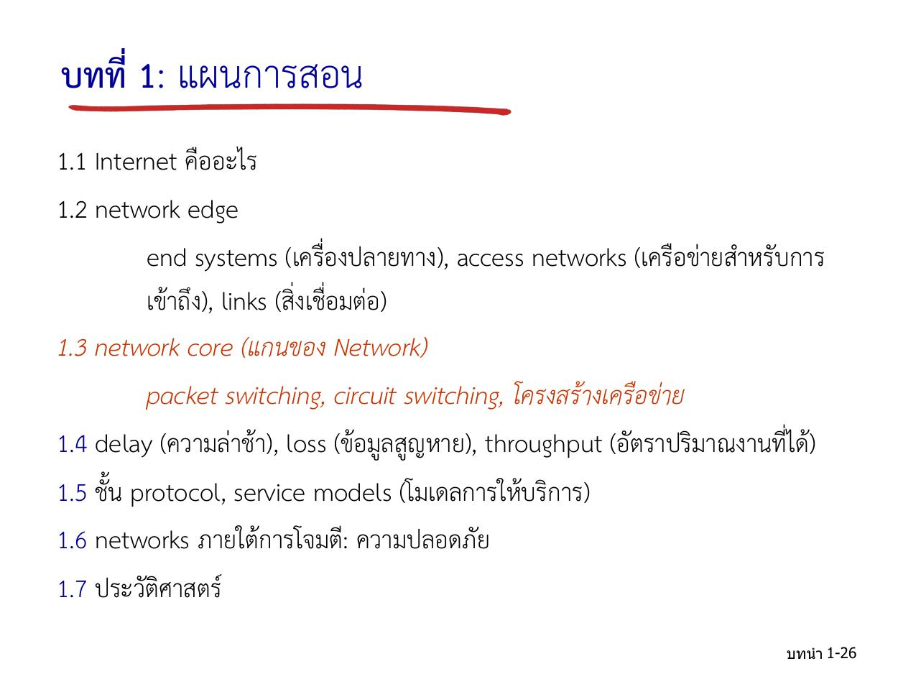
คลิกภาพเพื่อเปิดขยาย
อ่านข้อความต้นฉบับที่สกัดได้ (ไทย/อังกฤษตามไฟล์) บทที่ 1: แผนการสอน
1.1 Internet คืออะไร
1.2 network edge
end systems (เครื่องปลายทาง), access networks (เครือข่ายสาหรับการ
เข้าถึง), links (สิ่งเชื่อมต่อ)
1.3 network core (แกนของ Network)
packet switching, circuit switching, โครงสร้างเครือข่าย
1.4 delay (ความล่าช้า), loss (ข้อมูลสูญหาย), throughput (อัตราปริมาณงานที่ได้)
1.5 ชั้น protocol, service models (โมเดลการให้บริการ)
1.6 networks ภายใต้การโจมตี: ความปลอดภัย
1.7 ประวัติศาสตร์
บทนำ 1-26 ทบทวนภาษาไทย: 351 บท 1: Internet, Delay, Throughput และ Protocol Stack บทนำการสื่อสารข้อมูลและเครือข่าย แบบจำลองเครือข่าย OSI และ TCP/IP ข้อมูล สัญญาณ และข้อจำกัดของช่องสื่อสาร สื่อกลางส่งข้อมูล Switching และการส่งผ่านเครือข่าย Network Security: บริการและกลไก
กลับสารบัญ ↑ หน้า 27 — The network core ดูภาพต้นฉบับหน้า 27 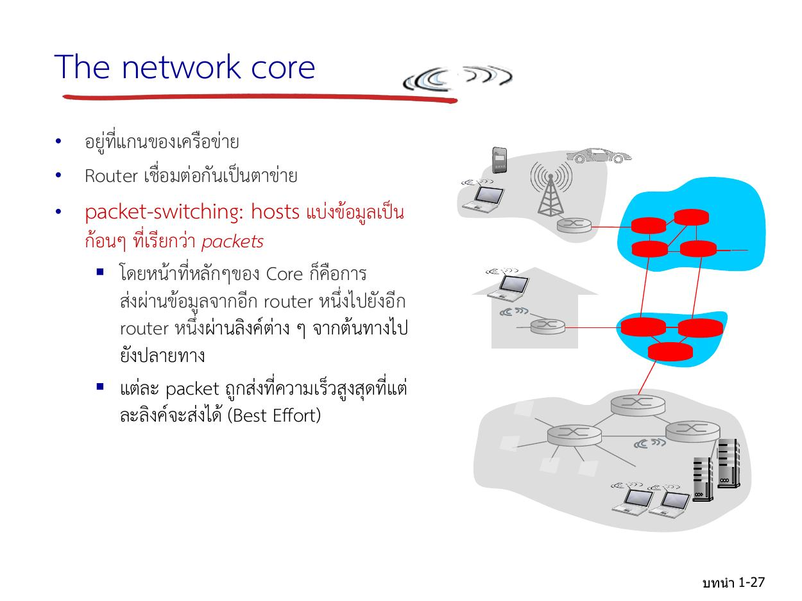
คลิกภาพเพื่อเปิดขยาย
อ่านข้อความต้นฉบับที่สกัดได้ (ไทย/อังกฤษตามไฟล์) The network core
• อยู่ที่แกนของเครือข่าย
• Router เชื่อมต่อกันเป็นตาข่าย
• packet-switching: hosts แบ่งข้อมูลเป็น
ก้อนๆ ที่เรียกว่า packets
โดยหน้าที่หลักๆของ Core ก็คือการ
ส่งผ่านข้อมูลจากอีก router หนึ่งไปยังอีก
router หนึ่งผ่านลิงค์ต่าง ๆ จากต้นทางไป
ยังปลายทาง
แต่ละ packet ถูกส่งที่ความเร็วสูงสุดที่แต่
ละลิงค์จะส่งได้ (Best Effort)
บทนำ 1-27 ทบทวนภาษาไทย: 351 บท 1: Internet, Delay, Throughput และ Protocol Stack บทนำการสื่อสารข้อมูลและเครือข่าย แบบจำลองเครือข่าย OSI และ TCP/IP ข้อมูล สัญญาณ และข้อจำกัดของช่องสื่อสาร สื่อกลางส่งข้อมูล Switching และการส่งผ่านเครือข่าย Network Security: บริการและกลไก
กลับสารบัญ ↑ หน้า 28 — รูปร่างของ Switches และ Routers ดูภาพต้นฉบับหน้า 28 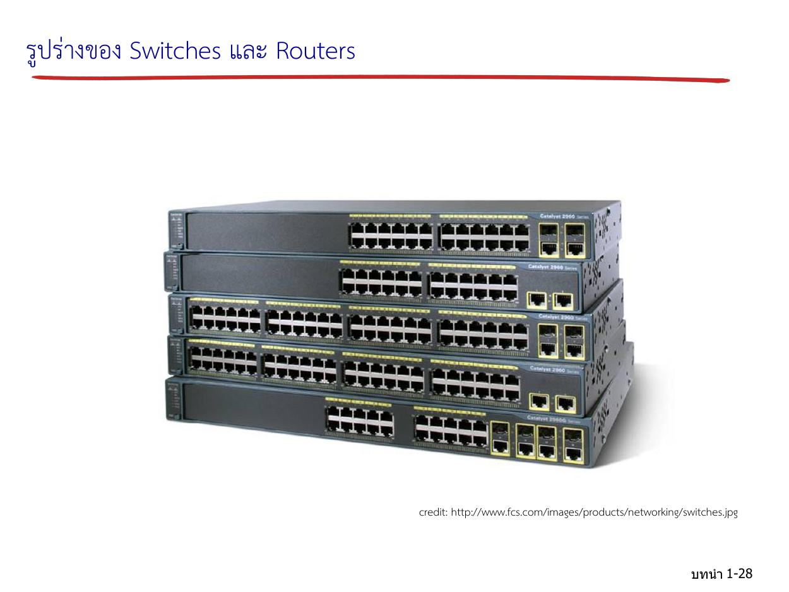
คลิกภาพเพื่อเปิดขยาย
อ่านข้อความต้นฉบับที่สกัดได้ (ไทย/อังกฤษตามไฟล์) รูปร่างของ Switches และ Routers
credit: http://www.fcs.com/images/products/networking/switches.jpg
บทนำ 1-28 ทบทวนภาษาไทย: 351 บท 1: Internet, Delay, Throughput และ Protocol Stack บทนำการสื่อสารข้อมูลและเครือข่าย แบบจำลองเครือข่าย OSI และ TCP/IP ข้อมูล สัญญาณ และข้อจำกัดของช่องสื่อสาร สื่อกลางส่งข้อมูล Switching และการส่งผ่านเครือข่าย Network Security: บริการและกลไก
กลับสารบัญ ↑ หน้า 29 — ทาไมเรียกว่า Switch ดูภาพต้นฉบับหน้า 29 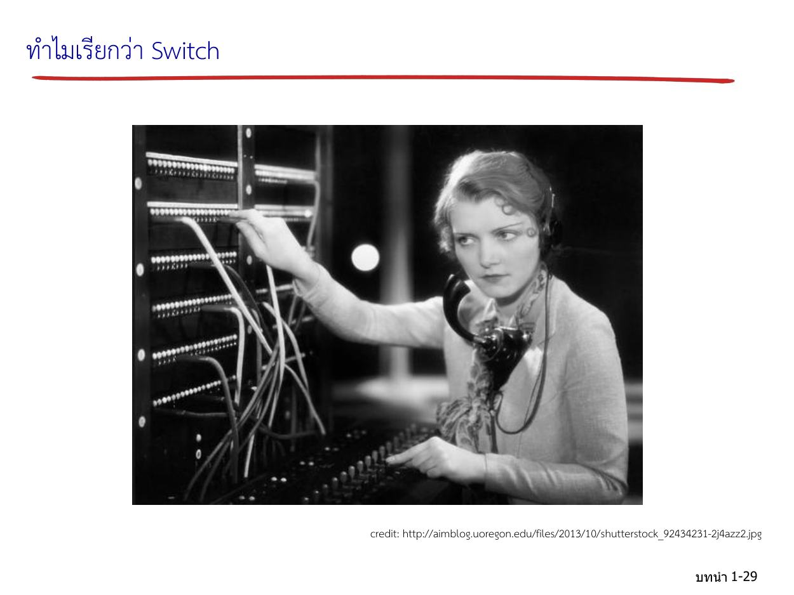
คลิกภาพเพื่อเปิดขยาย
อ่านข้อความต้นฉบับที่สกัดได้ (ไทย/อังกฤษตามไฟล์) ทาไมเรียกว่า Switch
credit: http://aimblog.uoregon.edu/files/2013/10/shutterstock_92434231-2j4azz2.jpg
บทนำ 1-29 ทบทวนภาษาไทย: 351 บท 1: Internet, Delay, Throughput และ Protocol Stack บทนำการสื่อสารข้อมูลและเครือข่าย แบบจำลองเครือข่าย OSI และ TCP/IP ข้อมูล สัญญาณ และข้อจำกัดของช่องสื่อสาร สื่อกลางส่งข้อมูล Switching และการส่งผ่านเครือข่าย Network Security: บริการและกลไก
กลับสารบัญ ↑ หน้า 30 — Packet-switching: store-and-forward ดูภาพต้นฉบับหน้า 30 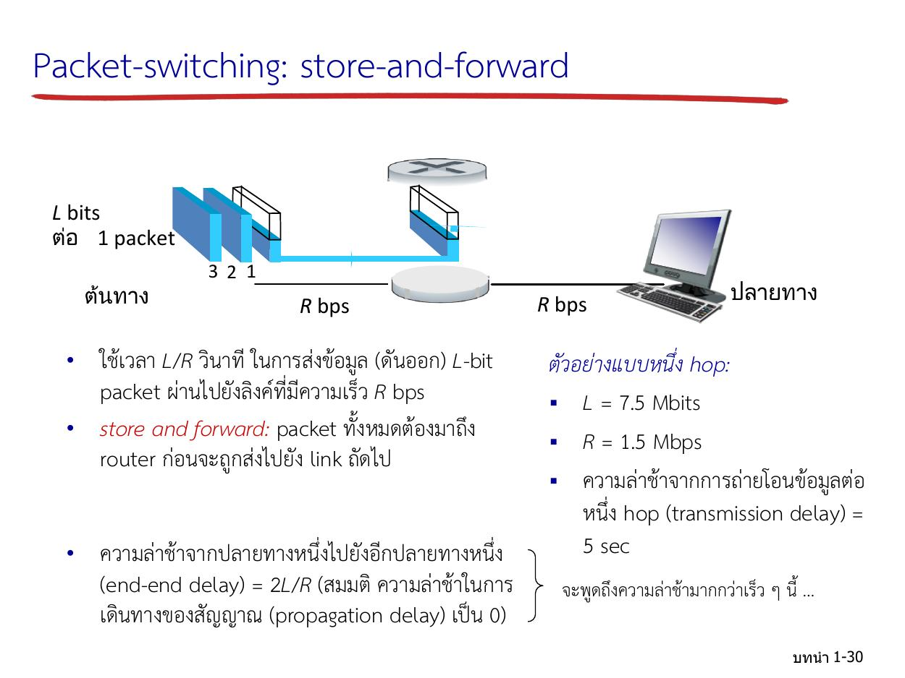
คลิกภาพเพื่อเปิดขยาย
อ่านข้อความต้นฉบับที่สกัดได้ (ไทย/อังกฤษตามไฟล์) Packet-switching: store-and-forward
L bits
ตอ่ 1 packet
3 2 1
ตนทาง
้ ปลายทาง
R bps R bps
• ใช้เวลา L/R วินาที ในการส่งข้อมูล (ดันออก) L-bit ตัวอย่างแบบหนึ่ง hop:
packet ผ่านไปยังลิงค์ที่มีความเร็ว R bps L = 7.5 Mbits
• store and forward: packet ทั้งหมดต้องมาถึง R = 1.5 Mbps
router ก่อนจะถูกส่งไปยัง link ถัดไป
ความล่าช้าจากการถ่ายโอนข้อมูลต่อ
หนึ่ง hop (transmission delay) =
• ความล่าช้าจากปลายทางหนึ่งไปยังอีกปลายทางหนึ่ง 5 sec
(end-end delay) = 2L/R (สมมติ ความล่าช้าในการ จะพูดถึงความล่าช้ามากกว่าเร็ว ๆ นี้ …
เดินทางของสัญญาณ (propagation delay) เป็น 0)
บทนำ 1-30 ทบทวนภาษาไทย: 351 บท 1: Internet, Delay, Throughput และ Protocol Stack บทนำการสื่อสารข้อมูลและเครือข่าย แบบจำลองเครือข่าย OSI และ TCP/IP ข้อมูล สัญญาณ และข้อจำกัดของช่องสื่อสาร สื่อกลางส่งข้อมูล Switching และการส่งผ่านเครือข่าย Network Security: บริการและกลไก
กลับสารบัญ ↑ หน้า 31 — Packet Switching: queueing delay, loss ดูภาพต้นฉบับหน้า 31 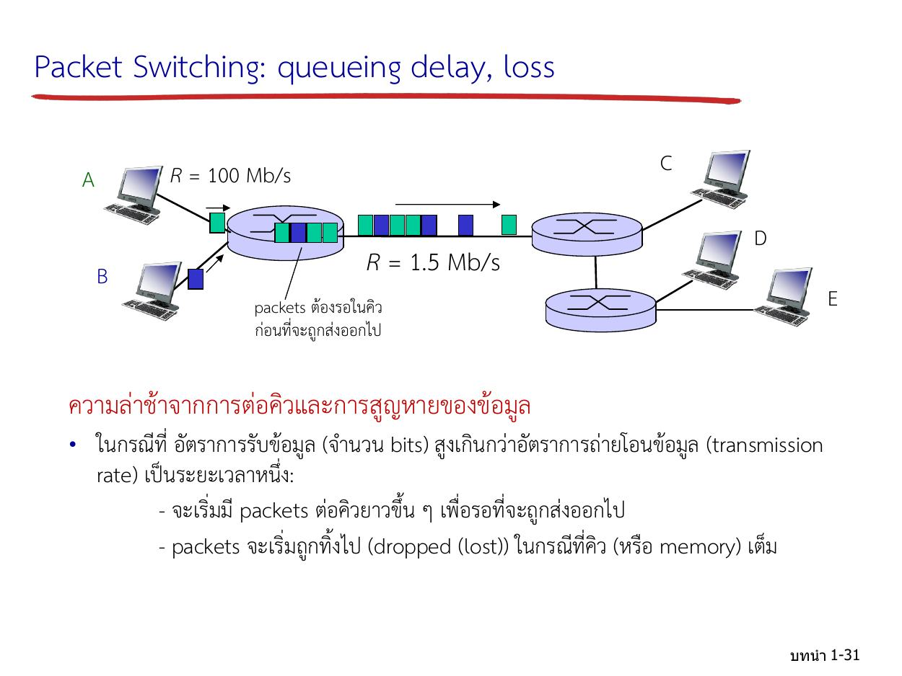
คลิกภาพเพื่อเปิดขยาย
อ่านข้อความต้นฉบับที่สกัดได้ (ไทย/อังกฤษตามไฟล์) Packet Switching: queueing delay, loss
R = 100 Mb/s C
A
D
B R = 1.5 Mb/s
packets ต้องรอในคิว E
ก่อนทีจ่ ะถูกส่งออกไป
ความล่าช้าจากการต่อคิวและการสูญหายของข้อมูล
• ในกรณีที่ อัตราการรับข้อมูล (จานวน bits) สูงเกินกว่าอัตราการถ่ายโอนข้อมูล (transmission
rate) เป็นระยะเวลาหนึ่ง:
- จะเริ่มมี packets ต่อคิวยาวขึ้น ๆ เพื่อรอที่จะถูกส่งออกไป
- packets จะเริ่มถูกทิ้งไป (dropped (lost)) ในกรณีทคี่ ิว (หรือ memory) เต็ม
บทนำ 1-31 ทบทวนภาษาไทย: 351 บท 1: Internet, Delay, Throughput และ Protocol Stack บทนำการสื่อสารข้อมูลและเครือข่าย แบบจำลองเครือข่าย OSI และ TCP/IP ข้อมูล สัญญาณ และข้อจำกัดของช่องสื่อสาร สื่อกลางส่งข้อมูล Switching และการส่งผ่านเครือข่าย Network Security: บริการและกลไก
กลับสารบัญ ↑ หน้า 32 — 2 หน้าที่หลักของ network-core ดูภาพต้นฉบับหน้า 32 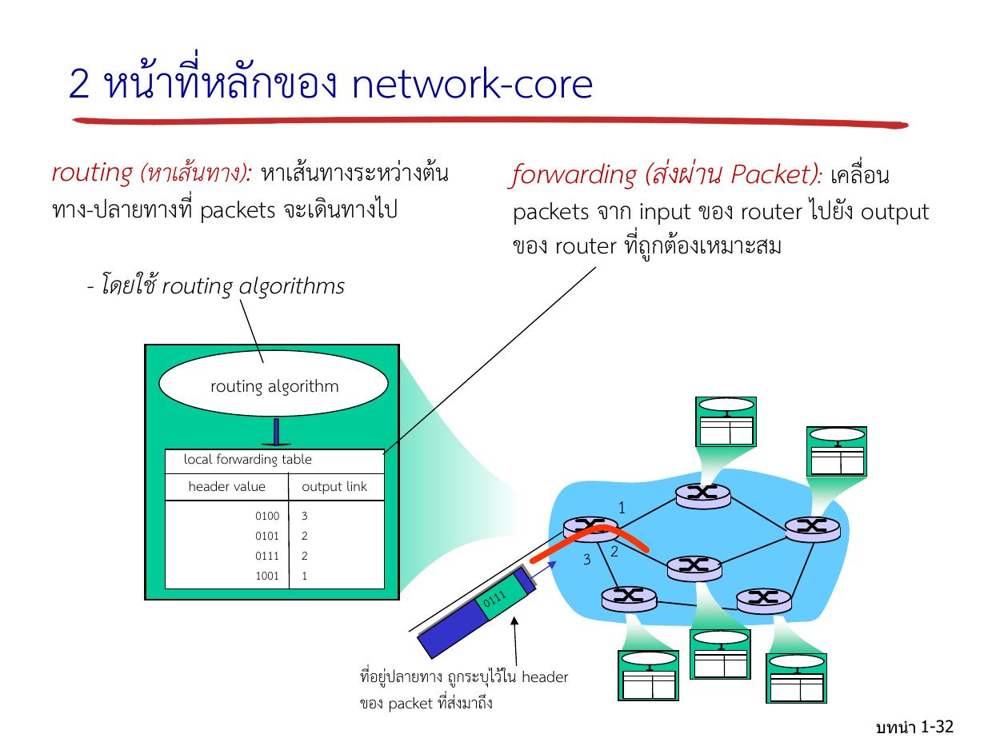
คลิกภาพเพื่อเปิดขยาย
อ่านข้อความต้นฉบับที่สกัดได้ (ไทย/อังกฤษตามไฟล์) 2 หน้าที่หลักของ network-core
routing (หาเส้นทาง): หาเส้นทางระหว่างต้น forwarding (ส่งผ่าน Packet): เคลื่อน
ทาง-ปลายทางที่ packets จะเดินทางไป packets จาก input ของ router ไปยัง output
ของ router ที่ถูกต้องเหมาะสม
- โดยใช้ routing algorithms
routing algorithm
local forwarding table
header value output link
0100 3 1
0101 2
0111 2 3 2
1001 1
ที่อยู่ปลายทาง ถูกระบุไว้ใน header
ของ packet ที่ส่งมาถึง
บทนำ 1-32 ทบทวนภาษาไทย: 351 บท 1: Internet, Delay, Throughput และ Protocol Stack บทนำการสื่อสารข้อมูลและเครือข่าย แบบจำลองเครือข่าย OSI และ TCP/IP ข้อมูล สัญญาณ และข้อจำกัดของช่องสื่อสาร สื่อกลางส่งข้อมูล Switching และการส่งผ่านเครือข่าย Network Security: บริการและกลไก
กลับสารบัญ ↑ หน้า 33 — core อีกชนิดหนึ่ง: circuit switching ดูภาพต้นฉบับหน้า 33 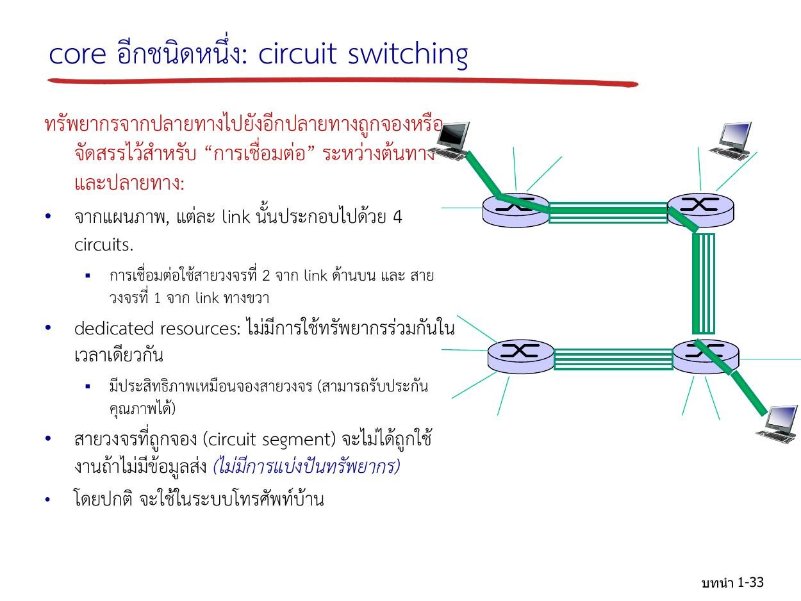
คลิกภาพเพื่อเปิดขยาย
อ่านข้อความต้นฉบับที่สกัดได้ (ไทย/อังกฤษตามไฟล์) core อีกชนิดหนึ่ง: circuit switching
ทรัพยากรจากปลายทางไปยังอีกปลายทางถูกจองหรือ
จัดสรรไว้สาหรับ “การเชื่อมต่อ” ระหว่างต้นทาง
และปลายทาง:
• จากแผนภาพ, แต่ละ link นั้นประกอบไปด้วย 4
circuits.
การเชื่อมต่อใช้สายวงจรที่ 2 จาก link ด้านบน และ สาย
วงจรที่ 1 จาก link ทางขวา
• dedicated resources: ไม่มีการใช้ทรัพยากรร่วมกันใน
เวลาเดียวกัน
มีประสิทธิภาพเหมือนจองสายวงจร (สามารถรับประกัน
คุณภาพได้)
• สายวงจรที่ถูกจอง (circuit segment) จะไม่ได้ถูกใช้
งานถ้าไม่มีข้อมูลส่ง (ไม่มีการแบ่งปันทรัพยากร)
• โดยปกติ จะใช้ในระบบโทรศัพท์บ้าน
บทนำ 1-33 ทบทวนภาษาไทย: 351 บท 1: Internet, Delay, Throughput และ Protocol Stack บทนำการสื่อสารข้อมูลและเครือข่าย แบบจำลองเครือข่าย OSI และ TCP/IP ข้อมูล สัญญาณ และข้อจำกัดของช่องสื่อสาร สื่อกลางส่งข้อมูล Switching และการส่งผ่านเครือข่าย Network Security: บริการและกลไก
กลับสารบัญ ↑ หน้า 34 — Circuit switching: FDM versus TDM ดูภาพต้นฉบับหน้า 34 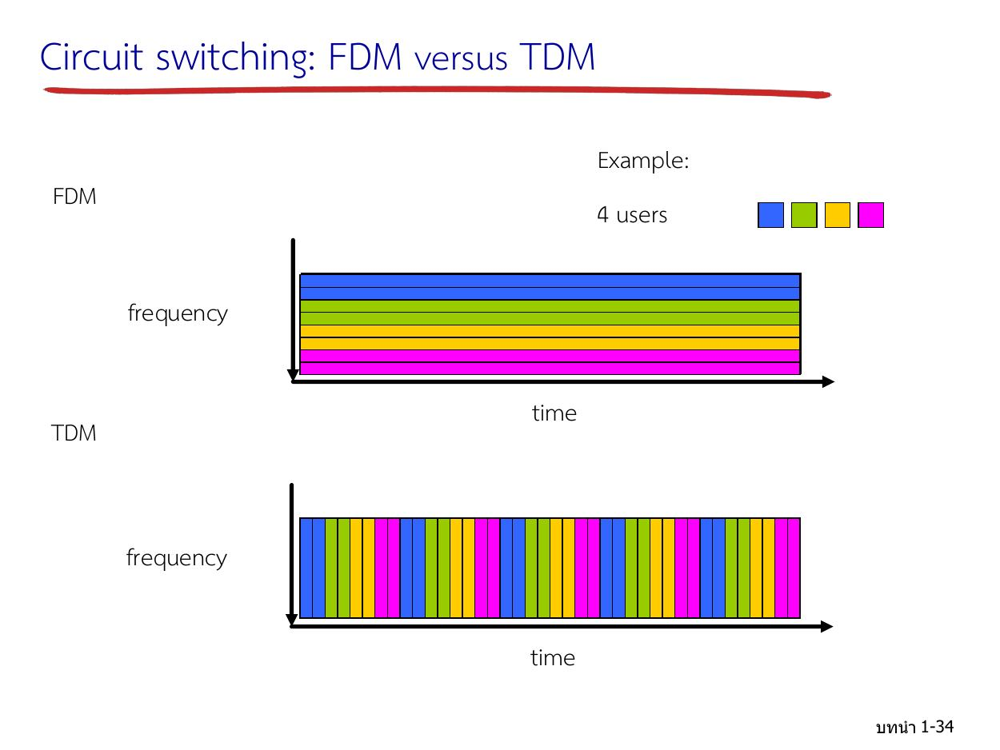
คลิกภาพเพื่อเปิดขยาย
อ่านข้อความต้นฉบับที่สกัดได้ (ไทย/อังกฤษตามไฟล์) Circuit switching: FDM versus TDM
Example:
FDM
4 users
frequency
time
TDM
frequency
time
บทนำ 1-34 ทบทวนภาษาไทย: 351 บท 1: Internet, Delay, Throughput และ Protocol Stack บทนำการสื่อสารข้อมูลและเครือข่าย แบบจำลองเครือข่าย OSI และ TCP/IP ข้อมูล สัญญาณ และข้อจำกัดของช่องสื่อสาร สื่อกลางส่งข้อมูล Switching และการส่งผ่านเครือข่าย Network Security: บริการและกลไก
กลับสารบัญ ↑ หน้า 35 — Packet switching versus circuit switching ดูภาพต้นฉบับหน้า 35 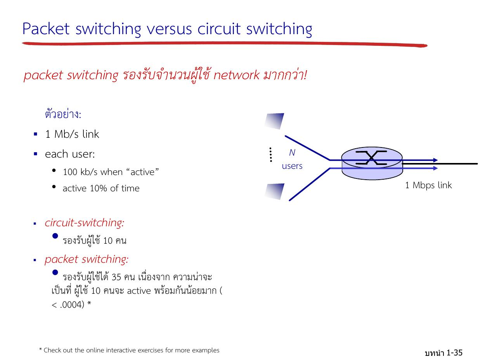
คลิกภาพเพื่อเปิดขยาย
อ่านข้อความต้นฉบับที่สกัดได้ (ไทย/อังกฤษตามไฟล์) Packet switching versus circuit switching
packet switching รองรับจานวนผู้ใช้ network มากกว่า!
ตัวอย่าง:
1 Mb/s link
each user: N
• 100 kb/s when “active” users
• active 10% of time 1 Mbps link
circuit-switching:
• รองรับผู้ใช้ 10 คน
packet switching:
• รองรับผู้ใช้ได้ 35 คน เนื่องจาก ความน่าจะ
เป็นที่ ผู้ใช้ 10 คนจะ active พร้อมกันน้อยมาก (
< .0004) *
* Check out the online interactive exercises for more examples บทนำ 1-35 ทบทวนภาษาไทย: 351 บท 1: Internet, Delay, Throughput และ Protocol Stack บทนำการสื่อสารข้อมูลและเครือข่าย แบบจำลองเครือข่าย OSI และ TCP/IP ข้อมูล สัญญาณ และข้อจำกัดของช่องสื่อสาร สื่อกลางส่งข้อมูล Switching และการส่งผ่านเครือข่าย Network Security: บริการและกลไก
กลับสารบัญ ↑ หน้า 36 — Packet switching versus circuit switching ดูภาพต้นฉบับหน้า 36 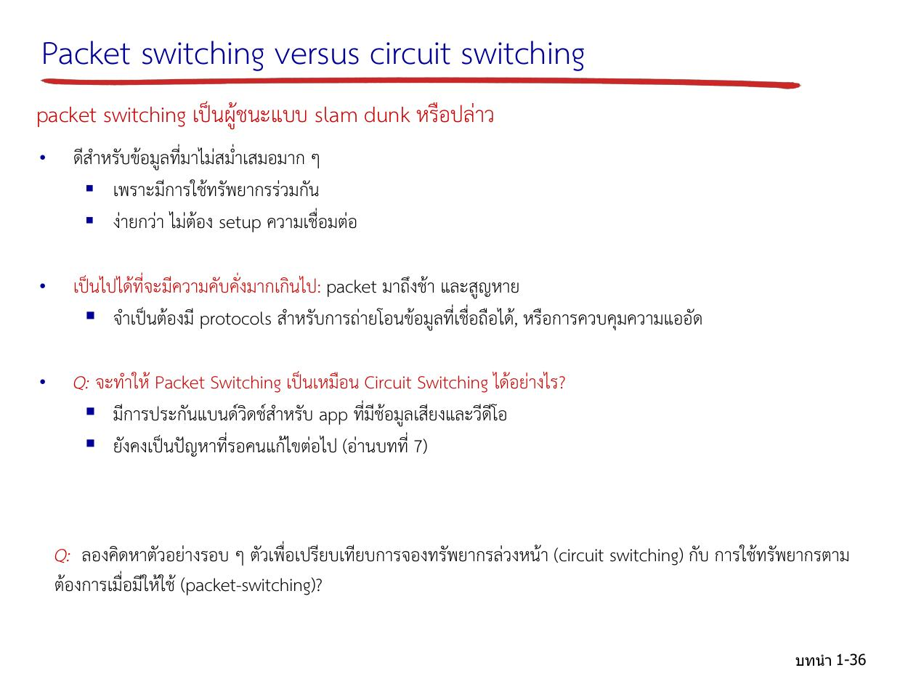
คลิกภาพเพื่อเปิดขยาย
อ่านข้อความต้นฉบับที่สกัดได้ (ไทย/อังกฤษตามไฟล์) Packet switching versus circuit switching
packet switching เป็นผู้ชนะแบบ slam dunk หรือปล่าว
• ดีสาหรับข้อมูลที่มาไม่สม่าเสมอมาก ๆ
เพราะมีการใช้ทรัพยากรร่วมกัน
ง่ายกว่า ไม่ต้อง setup ความเชื่อมต่อ
• เป็นไปได้ที่จะมีความคับคั่งมากเกินไป: packet มาถึงช้า และสูญหาย
จาเป็นต้องมี protocols สาหรับการถ่ายโอนข้อมูลที่เชื่อถือได้, หรือการควบคุมความแออัด
• Q: จะทาให้ Packet Switching เป็นเหมือน Circuit Switching ได้อย่างไร?
มีการประกันแบนด์วิดช์สาหรับ app ที่มีช้อมูลเสียงและวีดีโอ
ยังคงเป็นปัญหาที่รอคนแก้ไขต่อไป (อ่านบทที่ 7)
Q: ลองคิดหาตัวอย่างรอบ ๆ ตัวเพื่อเปรียบเทียบการจองทรัพยากรล่วงหน้า (circuit switching) กับ การใช้ทรัพยากรตาม
ต้องการเมื่อมีให้ใช้ (packet-switching)?
บทนำ 1-36 ทบทวนภาษาไทย: 351 บท 1: Internet, Delay, Throughput และ Protocol Stack บทนำการสื่อสารข้อมูลและเครือข่าย แบบจำลองเครือข่าย OSI และ TCP/IP ข้อมูล สัญญาณ และข้อจำกัดของช่องสื่อสาร สื่อกลางส่งข้อมูล Switching และการส่งผ่านเครือข่าย Network Security: บริการและกลไก
กลับสารบัญ ↑ หน้า 37 — โครงสร้างของ Internet: เครือข่ายของเครือข่าย ดูภาพต้นฉบับหน้า 37 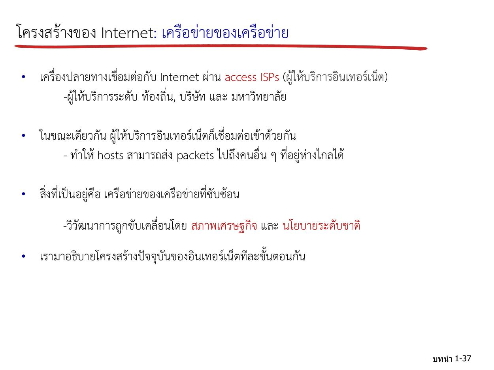
คลิกภาพเพื่อเปิดขยาย
อ่านข้อความต้นฉบับที่สกัดได้ (ไทย/อังกฤษตามไฟล์) โครงสร้างของ Internet: เครือข่ายของเครือข่าย
• เครื่องปลายทางเชื่อมต่อกับ Internet ผ่าน access ISPs (ผู้ให้บริการอินเทอร์เน็ต)
-ผู้ให้บริการระดับ ท้องถิ่น, บริษัท และ มหาวิทยาลัย
• ในขณะเดียวกัน ผูใ้ ห้บริการอินเทอร์เน็ตก็เชื่อมต่อเข้าด้วยกัน
- ทาให้ hosts สามารถส่ง packets ไปถึงคนอื่น ๆ ที่อยู่ห่างไกลได้
• สิ่งที่เป็นอยู่คือ เครือข่ายของเครือข่ายที่ซับซ้อน
-วิวัฒนาการถูกขับเคลื่อนโดย สภาพเศรษฐกิจ และ นโยบายระดับชาติ
• เรามาอธิบายโครงสร้างปัจจุบันของอินเทอร์เน็ตทีละขั้นตอนกัน
บทนำ 1-37 ทบทวนภาษาไทย: 351 บท 1: Internet, Delay, Throughput และ Protocol Stack บทนำการสื่อสารข้อมูลและเครือข่าย แบบจำลองเครือข่าย OSI และ TCP/IP ข้อมูล สัญญาณ และข้อจำกัดของช่องสื่อสาร สื่อกลางส่งข้อมูล Switching และการส่งผ่านเครือข่าย Network Security: บริการและกลไก
กลับสารบัญ ↑ หน้า 38 — โครงสร้างของ Internet: เครือข่ายของเครือข่าย ดูภาพต้นฉบับหน้า 38 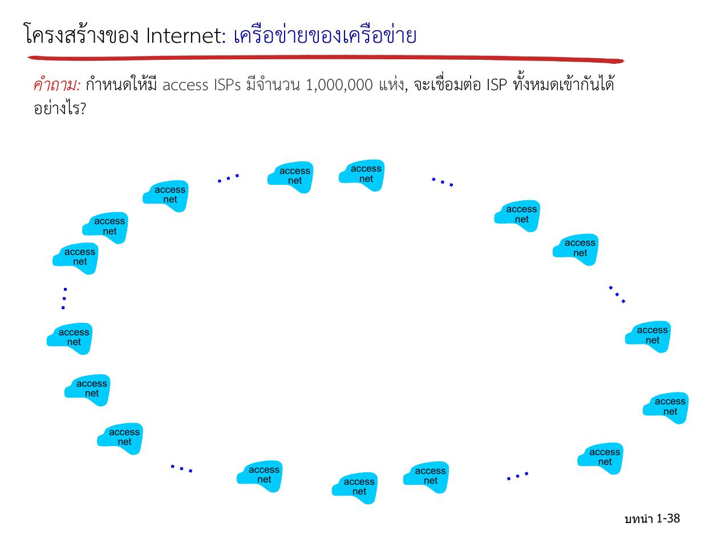
คลิกภาพเพื่อเปิดขยาย
อ่านข้อความต้นฉบับที่สกัดได้ (ไทย/อังกฤษตามไฟล์) โครงสร้างของ Internet: เครือข่ายของเครือข่าย
คาถาม: กาหนดให้มี access ISPs มีจานวน 1,000,000 แห่ง, จะเชื่อมต่อ ISP ทั้งหมดเข้ากันได้
อย่างไร?
access access
net net
access
net
access
access net
net
access
access net
net
access access
net net
access
net
access
net
access
net
access
net
access access
net access net
net
บทนำ 1-38 ทบทวนภาษาไทย: 351 บท 1: Internet, Delay, Throughput และ Protocol Stack บทนำการสื่อสารข้อมูลและเครือข่าย แบบจำลองเครือข่าย OSI และ TCP/IP ข้อมูล สัญญาณ และข้อจำกัดของช่องสื่อสาร สื่อกลางส่งข้อมูล Switching และการส่งผ่านเครือข่าย Network Security: บริการและกลไก
กลับสารบัญ ↑ หน้า 39 — โครงสร้างของ Internet: เครือข่ายของเครือข่าย ดูภาพต้นฉบับหน้า 39 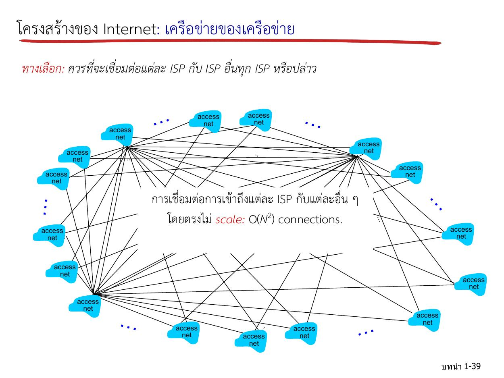
คลิกภาพเพื่อเปิดขยาย
อ่านข้อความต้นฉบับที่สกัดได้ (ไทย/อังกฤษตามไฟล์) โครงสร้างของ Internet: เครือข่ายของเครือข่าย
ทางเลือก: ควรที่จะเชื่อมต่อแต่ละ ISP กับ ISP อื่นทุก ISP หรือปล่าว
access access
net net
access
net
access
access net
net
access
access net
net
การเชื่อมต่อการเข้าถึงแต่ละ ISP กับแต่ละอื่น ๆ
โดยตรงไม่ scale: O(N2) connections.
access access
net net
access
net
access
net
access
net
access
net
access access
net access net
net
บทนำ 1-39 ทบทวนภาษาไทย: 351 บท 1: Internet, Delay, Throughput และ Protocol Stack บทนำการสื่อสารข้อมูลและเครือข่าย แบบจำลองเครือข่าย OSI และ TCP/IP ข้อมูล สัญญาณ และข้อจำกัดของช่องสื่อสาร สื่อกลางส่งข้อมูล Switching และการส่งผ่านเครือข่าย Network Security: บริการและกลไก
กลับสารบัญ ↑ หน้า 40 — โครงสร้างของ Internet: เครือข่ายของเครือข่าย ดูภาพต้นฉบับหน้า 40 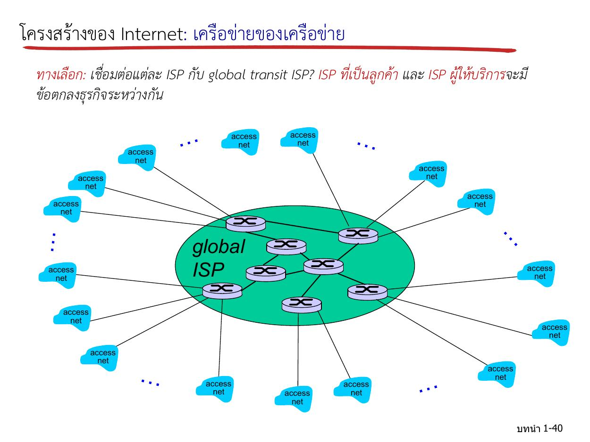
คลิกภาพเพื่อเปิดขยาย
อ่านข้อความต้นฉบับที่สกัดได้ (ไทย/อังกฤษตามไฟล์) โครงสร้างของ Internet: เครือข่ายของเครือข่าย
ทางเลือก: เชื่อมต่อแต่ละ ISP กับ global transit ISP? ISP ที่เป็นลูกค้า และ ISP ผูใ้ ห้บริการจะมี
ข้อตกลงธุรกิจระหว่างกัน
access access
net net
access
net
access
access net
net
access
access net
net
global
access
net
ISP access
net
access
net
access
net
access
net
access
net
access access
net access net
net
บทนำ 1-40 ทบทวนภาษาไทย: 351 บท 1: Internet, Delay, Throughput และ Protocol Stack บทนำการสื่อสารข้อมูลและเครือข่าย แบบจำลองเครือข่าย OSI และ TCP/IP ข้อมูล สัญญาณ และข้อจำกัดของช่องสื่อสาร สื่อกลางส่งข้อมูล Switching และการส่งผ่านเครือข่าย Network Security: บริการและกลไก
กลับสารบัญ ↑ หน้า 41 — โครงสร้างของ Internet: เครือข่ายของเครือข่าย ดูภาพต้นฉบับหน้า 41 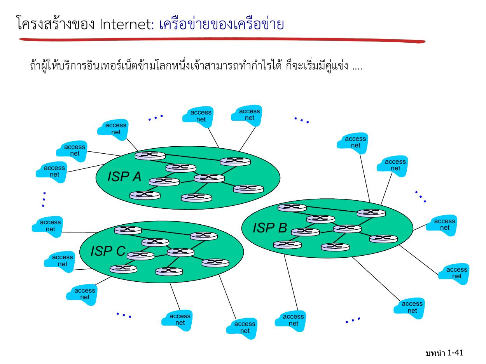
คลิกภาพเพื่อเปิดขยาย
อ่านข้อความต้นฉบับที่สกัดได้ (ไทย/อังกฤษตามไฟล์) โครงสร้างของ Internet: เครือข่ายของเครือข่าย
ถ้าผู้ให้บริการอินเทอร์เน็ตข้ามโลกหนึ่งเจ้าสามารถทากาไรได้ ก็จะเริ่มมีคู่แข่ง ....
access access
net net
access
net
access
access net
net
access
access net
net
ISP A
access access
net ISP B net
access
ISP C
net
access
net
access
net
access
net
access access
net access net
net
บทนำ 1-41 ทบทวนภาษาไทย: 351 บท 1: Internet, Delay, Throughput และ Protocol Stack บทนำการสื่อสารข้อมูลและเครือข่าย แบบจำลองเครือข่าย OSI และ TCP/IP ข้อมูล สัญญาณ และข้อจำกัดของช่องสื่อสาร สื่อกลางส่งข้อมูล Switching และการส่งผ่านเครือข่าย Network Security: บริการและกลไก
กลับสารบัญ ↑ หน้า 42 — โครงสร้างของ Internet: เครือข่ายของเครือข่าย ดูภาพต้นฉบับหน้า 42 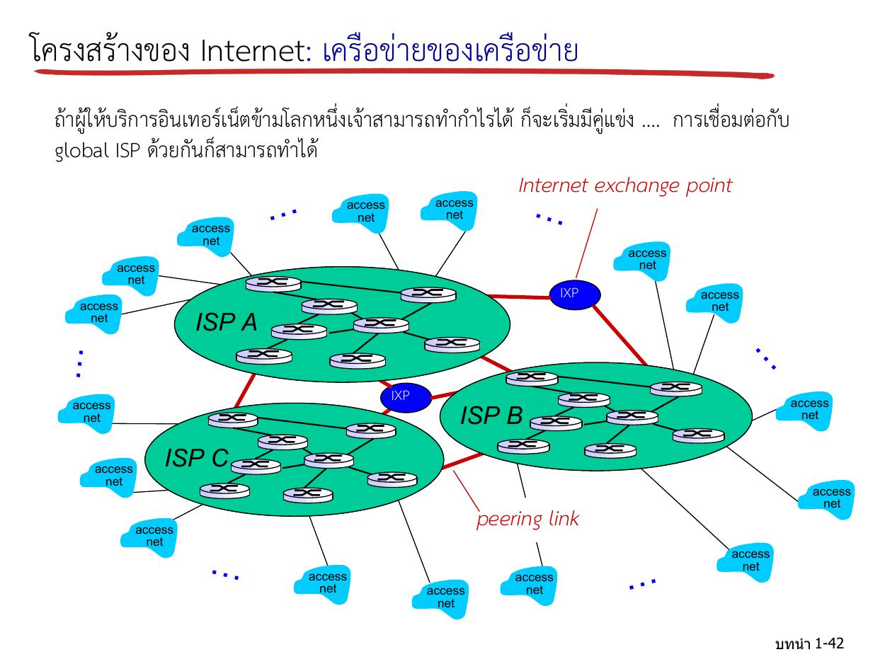
คลิกภาพเพื่อเปิดขยาย
อ่านข้อความต้นฉบับที่สกัดได้ (ไทย/อังกฤษตามไฟล์) โครงสร้างของ Internet: เครือข่ายของเครือข่าย
ถ้าผู้ให้บริการอินเทอร์เน็ตข้ามโลกหนึ่งเจ้าสามารถทากาไรได้ ก็จะเริ่มมีคู่แข่ง …. การเชื่อมต่อกับ
global ISP ด้วยกันก็สามารถทาได้
access
Internet exchange point
access
net net
access
net
access
access net
net
IXP access
access net
net
ISP A
access
IXP access
net ISP B net
access
ISP C
net
access
net
access
peering link
net
access
net
access access
net access net
net
บทนำ 1-42 ทบทวนภาษาไทย: 351 บท 1: Internet, Delay, Throughput และ Protocol Stack บทนำการสื่อสารข้อมูลและเครือข่าย แบบจำลองเครือข่าย OSI และ TCP/IP ข้อมูล สัญญาณ และข้อจำกัดของช่องสื่อสาร สื่อกลางส่งข้อมูล Switching และการส่งผ่านเครือข่าย Network Security: บริการและกลไก
กลับสารบัญ ↑ หน้า 43 — โครงสร้างของ Internet: เครือข่ายของเครือข่าย ดูภาพต้นฉบับหน้า 43 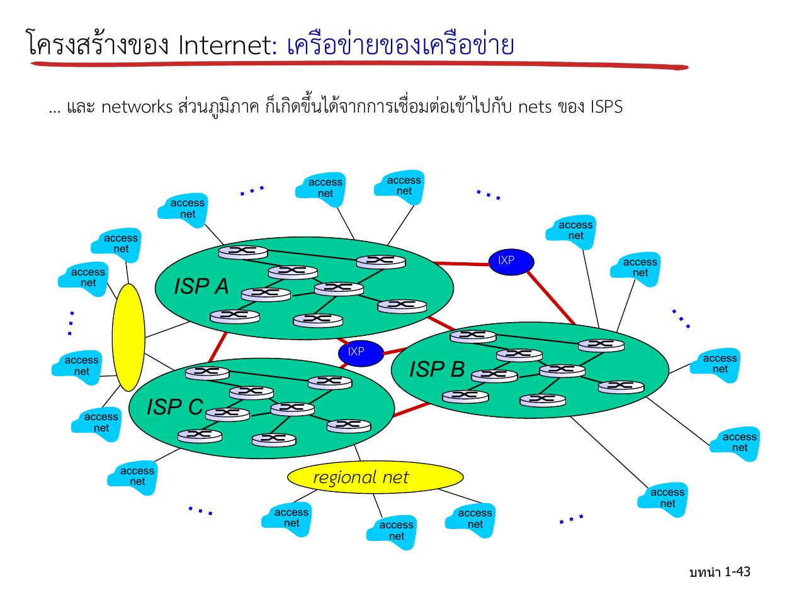
คลิกภาพเพื่อเปิดขยาย
อ่านข้อความต้นฉบับที่สกัดได้ (ไทย/อังกฤษตามไฟล์) โครงสร้างของ Internet: เครือข่ายของเครือข่าย
… และ networks ส่วนภูมิภาค ก็เกิดขึ้นได้จากการเชื่อมต่อเข้าไปกับ nets ของ ISPS
access access
net net
access
net
access
access net
net
IXP access
access net
net
ISP A
access
IXP access
net ISP B net
access
ISP C
net
access
net
access
net regional net access
net
access access
net access net
net
บทนำ 1-43 ทบทวนภาษาไทย: 351 บท 1: Internet, Delay, Throughput และ Protocol Stack บทนำการสื่อสารข้อมูลและเครือข่าย แบบจำลองเครือข่าย OSI และ TCP/IP ข้อมูล สัญญาณ และข้อจำกัดของช่องสื่อสาร สื่อกลางส่งข้อมูล Switching และการส่งผ่านเครือข่าย Network Security: บริการและกลไก
กลับสารบัญ ↑ หน้า 44 — โครงสร้างของ Internet: เครือข่ายของเครือข่าย ดูภาพต้นฉบับหน้า 44 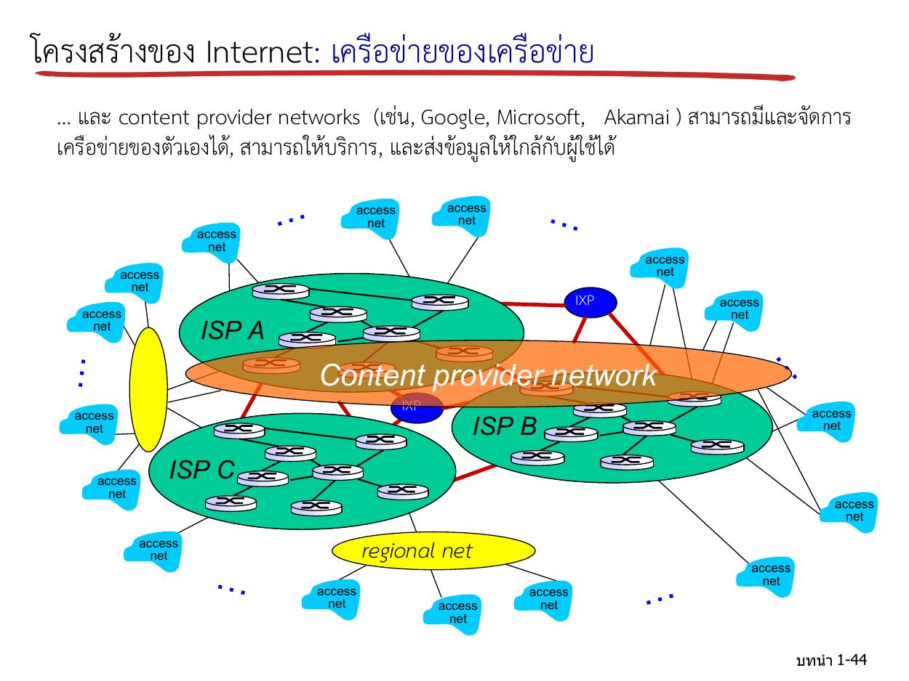
คลิกภาพเพื่อเปิดขยาย
อ่านข้อความต้นฉบับที่สกัดได้ (ไทย/อังกฤษตามไฟล์) โครงสร้างของ Internet: เครือข่ายของเครือข่าย
… และ content provider networks (เช่น, Google, Microsoft, Akamai ) สามารถมีและจัดการ
เครือข่ายของตัวเองได้, สามารถให้บริการ, และส่งข้อมูลให้ใกล้กับผู้ใช้ได้
access access
net net
access
net
access
access net
net
IXP access
access net
net
ISP A
Content provider network
Content provider network
access
IXP access
net ISP B net
access
ISP C
net
access
net
access
net regional net access
net
access access
net access net
net
บทนำ 1-44 ทบทวนภาษาไทย: 351 บท 1: Internet, Delay, Throughput และ Protocol Stack บทนำการสื่อสารข้อมูลและเครือข่าย แบบจำลองเครือข่าย OSI และ TCP/IP ข้อมูล สัญญาณ และข้อจำกัดของช่องสื่อสาร สื่อกลางส่งข้อมูล Switching และการส่งผ่านเครือข่าย Network Security: บริการและกลไก
กลับสารบัญ ↑ หน้า 45 — โครงสร้างของ Internet: เครือข่ายของเครือข่าย ดูภาพต้นฉบับหน้า 45 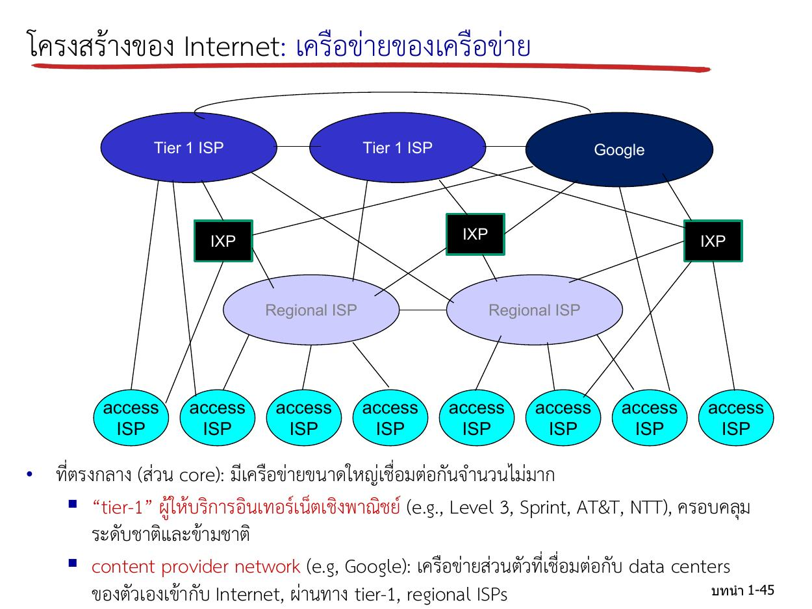
คลิกภาพเพื่อเปิดขยาย
อ่านข้อความต้นฉบับที่สกัดได้ (ไทย/อังกฤษตามไฟล์) โครงสร้างของ Internet: เครือข่ายของเครือข่าย
Tier 1 ISP Tier 1 ISP Google
IXP IXP IXP
Regional ISP Regional ISP
access access access access access access access access
ISP ISP ISP ISP ISP ISP ISP ISP
• ที่ตรงกลาง (ส่วน core): มีเครือข่ายขนาดใหญ่เชื่อมต่อกันจานวนไม่มาก
“tier-1” ผู้ให้บริการอินเทอร์เน็ตเชิงพาณิชย์ (e.g., Level 3, Sprint, AT&T, NTT), ครอบคลุม
ระดับชาติและข้ามชาติ
content provider network (e.g, Google): เครือข่ายส่วนตัวที่เชื่อมต่อกับ data centers
ของตัวเองเข้ากับ Internet, ผ่านทาง tier-1, regional ISPs บทนำ 1-45 ทบทวนภาษาไทย: 351 บท 1: Internet, Delay, Throughput และ Protocol Stack บทนำการสื่อสารข้อมูลและเครือข่าย แบบจำลองเครือข่าย OSI และ TCP/IP ข้อมูล สัญญาณ และข้อจำกัดของช่องสื่อสาร สื่อกลางส่งข้อมูล Switching และการส่งผ่านเครือข่าย Network Security: บริการและกลไก
กลับสารบัญ ↑ หน้า 46 — ผู้ให้บริการอินเตอร์เน็ตชั้นที่ 1: e.g., Sprint ดูภาพต้นฉบับหน้า 46 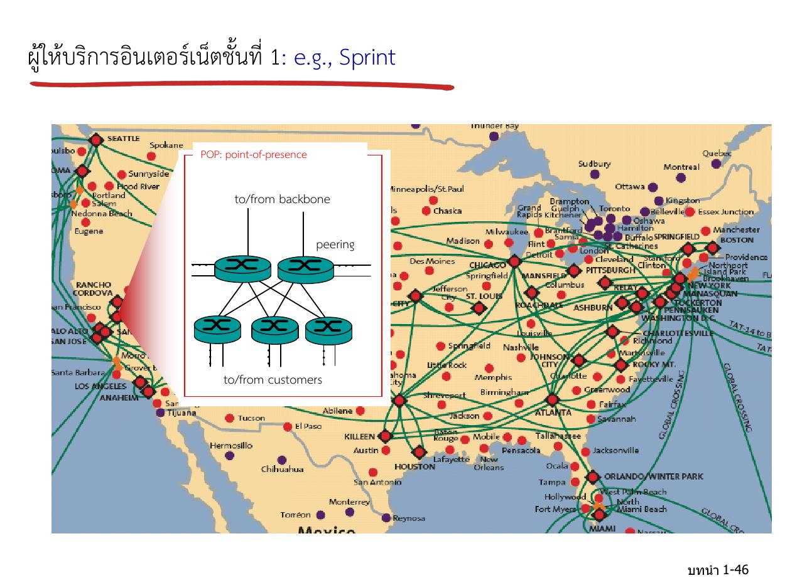
คลิกภาพเพื่อเปิดขยาย
อ่านข้อความต้นฉบับที่สกัดได้ (ไทย/อังกฤษตามไฟล์) ผู้ให้บริการอินเตอร์เน็ตชั้นที่ 1: e.g., Sprint
POP: point-of-presence
to/from backbone
peering
… … …
…
…
to/from customers
บทนำ 1-46 ทบทวนภาษาไทย: 351 บท 1: Internet, Delay, Throughput และ Protocol Stack บทนำการสื่อสารข้อมูลและเครือข่าย แบบจำลองเครือข่าย OSI และ TCP/IP ข้อมูล สัญญาณ และข้อจำกัดของช่องสื่อสาร สื่อกลางส่งข้อมูล Switching และการส่งผ่านเครือข่าย Network Security: บริการและกลไก
กลับสารบัญ ↑ หน้า 47 — บทที่ 1: แผนการสอน ดูภาพต้นฉบับหน้า 47 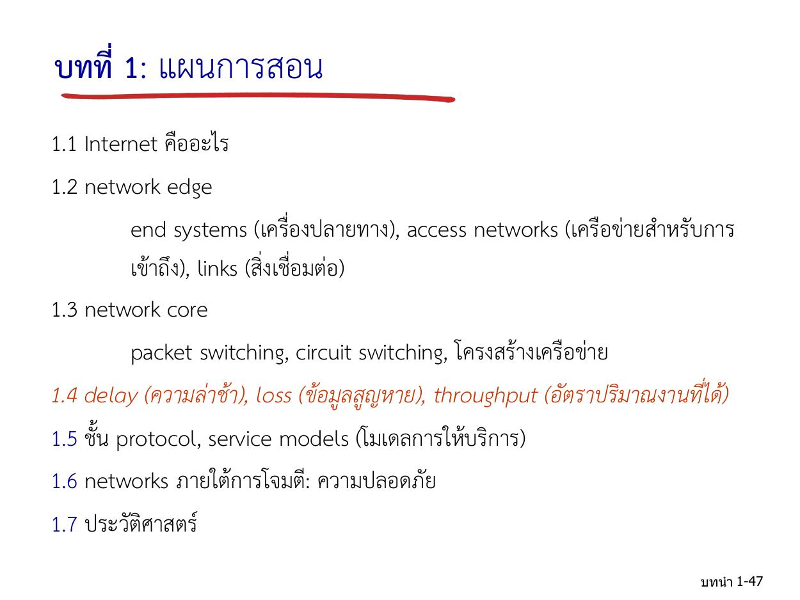
คลิกภาพเพื่อเปิดขยาย
อ่านข้อความต้นฉบับที่สกัดได้ (ไทย/อังกฤษตามไฟล์) บทที่ 1: แผนการสอน
1.1 Internet คืออะไร
1.2 network edge
end systems (เครื่องปลายทาง), access networks (เครือข่ายสาหรับการ
เข้าถึง), links (สิ่งเชื่อมต่อ)
1.3 network core
packet switching, circuit switching, โครงสร้างเครือข่าย
1.4 delay (ความล่าช้า), loss (ข้อมูลสูญหาย), throughput (อัตราปริมาณงานที่ได้)
1.5 ชั้น protocol, service models (โมเดลการให้บริการ)
1.6 networks ภายใต้การโจมตี: ความปลอดภัย
1.7 ประวัติศาสตร์
บทนำ 1-47 ทบทวนภาษาไทย: 351 บท 1: Internet, Delay, Throughput และ Protocol Stack บทนำการสื่อสารข้อมูลและเครือข่าย แบบจำลองเครือข่าย OSI และ TCP/IP ข้อมูล สัญญาณ และข้อจำกัดของช่องสื่อสาร สื่อกลางส่งข้อมูล Switching และการส่งผ่านเครือข่าย Network Security: บริการและกลไก
กลับสารบัญ ↑ หน้า 48 — การสูญหายและความล่าช้าเกิดขึ้นได้อย่างไร? ดูภาพต้นฉบับหน้า 48 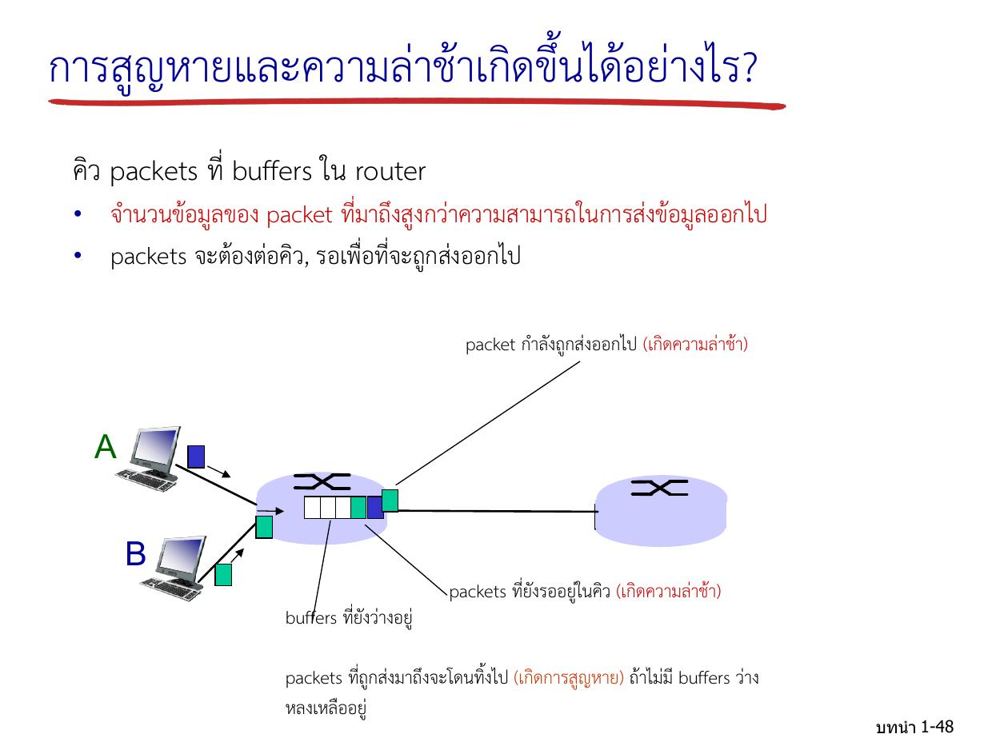
คลิกภาพเพื่อเปิดขยาย
อ่านข้อความต้นฉบับที่สกัดได้ (ไทย/อังกฤษตามไฟล์) การสูญหายและความล่าช้าเกิดขึ้นได้อย่างไร?
คิว packets ที่ buffers ใน router
• จานวนข้อมูลของ packet ที่มาถึงสูงกว่าความสามารถในการส่งข้อมูลออกไป
• packets จะต้องต่อคิว, รอเพื่อที่จะถูกส่งออกไป
packet กาลังถูกส่งออกไป (เกิดความล่าช้า)
A
B
packets ที่ยังรออยู่ในคิว (เกิดความล่าช้า)
buffers ที่ยังว่างอยู่
packets ที่ถูกส่งมาถึงจะโดนทิ้งไป (เกิดการสูญหาย) ถ้าไม่มี buffers ว่าง
หลงเหลืออยู่
บทนำ 1-48 ทบทวนภาษาไทย: 351 บท 1: Internet, Delay, Throughput และ Protocol Stack บทนำการสื่อสารข้อมูลและเครือข่าย แบบจำลองเครือข่าย OSI และ TCP/IP ข้อมูล สัญญาณ และข้อจำกัดของช่องสื่อสาร สื่อกลางส่งข้อมูล Switching และการส่งผ่านเครือข่าย Network Security: บริการและกลไก
กลับสารบัญ ↑ หน้า 49 — Four sources of packet delay ดูภาพต้นฉบับหน้า 49 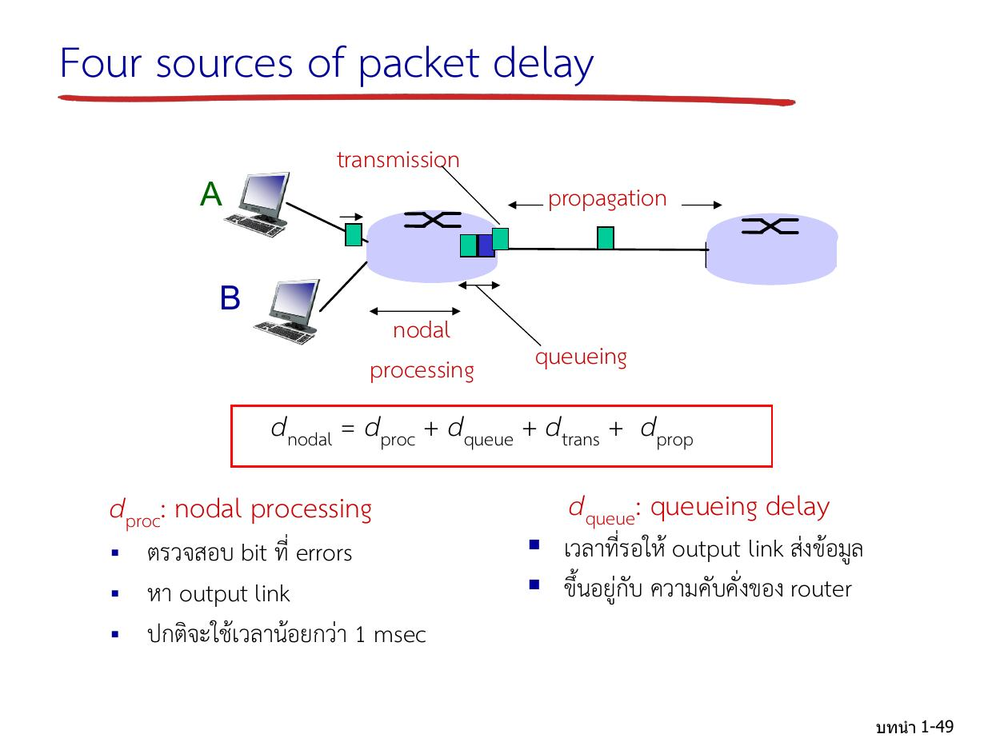
คลิกภาพเพื่อเปิดขยาย
อ่านข้อความต้นฉบับที่สกัดได้ (ไทย/อังกฤษตามไฟล์) Four sources of packet delay
transmission
A propagation
B
nodal
processing queueing
dnodal = dproc + dqueue + dtrans + dprop
dproc: nodal processing dqueue: queueing delay
ตรวจสอบ bit ที่ errors เวลาที่รอให้ output link ส่งข้อมูล
หา output link ขึ้นอยู่กับ ความคับคั่งของ router
ปกติจะใช้เวลาน้อยกว่า 1 msec
บทนำ 1-49 ทบทวนภาษาไทย: 351 บท 1: Internet, Delay, Throughput และ Protocol Stack บทนำการสื่อสารข้อมูลและเครือข่าย แบบจำลองเครือข่าย OSI และ TCP/IP ข้อมูล สัญญาณ และข้อจำกัดของช่องสื่อสาร สื่อกลางส่งข้อมูล Switching และการส่งผ่านเครือข่าย Network Security: บริการและกลไก
กลับสารบัญ ↑ หน้า 50 — Four sources of packet delay ดูภาพต้นฉบับหน้า 50 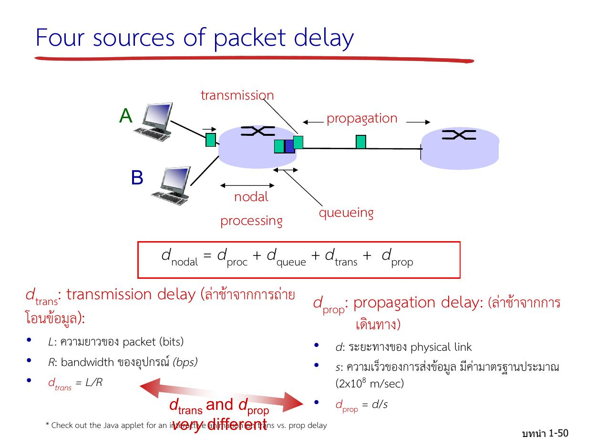
คลิกภาพเพื่อเปิดขยาย
อ่านข้อความต้นฉบับที่สกัดได้ (ไทย/อังกฤษตามไฟล์) Four sources of packet delay
transmission
A propagation
B
nodal
processing queueing
dnodal = dproc + dqueue + dtrans + dprop
dtrans: transmission delay (ล่าช้าจากการถ่าย d : propagation delay: (ล่าช้าจากการ
prop
โอนข้อมูล): เดินทาง)
• L: ความยาวของ packet (bits) • d: ระยะทางของ physical link
• R: bandwidth ของอุปกรณ์ (bps) • s: ความเร็วของการส่งข้อมูล มีค่ามาตรฐานประมาณ
• dtrans = L/R (2x108 m/sec)
dtrans and dprop • dprop = d/s
very different
* Check out the Java applet for an interactive animation on trans vs. prop delay
บทนำ 1-50 ทบทวนภาษาไทย: 351 บท 1: Internet, Delay, Throughput และ Protocol Stack บทนำการสื่อสารข้อมูลและเครือข่าย แบบจำลองเครือข่าย OSI และ TCP/IP ข้อมูล สัญญาณ และข้อจำกัดของช่องสื่อสาร สื่อกลางส่งข้อมูล Switching และการส่งผ่านเครือข่าย Network Security: บริการและกลไก
กลับสารบัญ ↑ หน้า 51 — เปรียบเหมือนขบวนรถยนต์ ดูภาพต้นฉบับหน้า 51 คลิกภาพเพื่อเปิดขยาย
อ่านข้อความต้นฉบับที่สกัดได้ (ไทย/อังกฤษตามไฟล์) เปรียบเหมือนขบวนรถยนต์
100 km 100 km
ขบวนรถยนต์ 10 คัน จุดจ่าย จุดจ่าย
ค่าบริการ ค่าบริการ
• Propagation: รถยนต์ขับเคลื่อนด้วยความเร็ว 100 เวลาที่ขบวนรถยนต์ 10 คันจะผ่านจุด
กม./ชม. จ่ายค่าบริการไปสู่ hightway = 12*10
• Transmit: จุดจ่ายค่าบริการใช้เวลา 12 วินาทีสาหรับ = 120 วินาที
การบริการ (บริการ 1 คน เสมืนเวลาส่ง1 บิท)
• รถยนต์ ~ บิท; ขบวน ~ packet เวลาของรถยนต์คันสุดท้ายจากจุดจ่าย
ค่าบริการที่ 1 ไปสู่จุดจ่ายค่าบริการที่ 2 :
• คาถาม: ใช้เวลานานเท่าไร ขบวนรถยนต์ทั้งหมดจะ 100km/(100 กม./ชม.)= 1 hr
เคลื่อนที่ถึงจุดจ่ายค่าบริการที่ 2?
คาตอบ : 62 นาที
บทนำ 1-51 ทบทวนภาษาไทย: 351 บท 1: Internet, Delay, Throughput และ Protocol Stack บทนำการสื่อสารข้อมูลและเครือข่าย แบบจำลองเครือข่าย OSI และ TCP/IP ข้อมูล สัญญาณ และข้อจำกัดของช่องสื่อสาร สื่อกลางส่งข้อมูล Switching และการส่งผ่านเครือข่าย Network Security: บริการและกลไก
กลับสารบัญ ↑ หน้า 52 — เปรียบเหมือนขบวนรถยนต์ (เพิ่มเติม) ดูภาพต้นฉบับหน้า 52 คลิกภาพเพื่อเปิดขยาย
อ่านข้อความต้นฉบับที่สกัดได้ (ไทย/อังกฤษตามไฟล์) เปรียบเหมือนขบวนรถยนต์ (เพิ่มเติม)
100 km 100 km
ขบวนรถยนต์ 10 คัน จุดจ่าย จุดจ่าย
ค่าบริการ ค่าบริการ
• สมมติว่ารถยนต์ใช้ความเร็วที่ 1000 กม.ต่อชม.
• และสมมติจุดจ่ายค่าบริการใช้เวลา 1 นาที สาหรับบริการรถยนต์ 1 คัน
• คาถาม : จะมีรถยนต์มาถึงจุดจ่ายค่าบริการที่ 2 ก่อนที่จุดจ่ายค่าบริการที่ 1 จะบริการรถยนต์ทึ้ง
หมดหรือไม่ ?
A: มี ! ภายใน 7 นาทีรถยนต์คันที่ 1 จะมาถึงจุดจ่ายค่าบริการที่ 2 และเหลือรถยนต์อีก 3 คันที่
จุดจ่ายค่าบริการที่ 1
บทนำ 1-52 ทบทวนภาษาไทย: 351 บท 1: Internet, Delay, Throughput และ Protocol Stack บทนำการสื่อสารข้อมูลและเครือข่าย แบบจำลองเครือข่าย OSI และ TCP/IP ข้อมูล สัญญาณ และข้อจำกัดของช่องสื่อสาร สื่อกลางส่งข้อมูล Switching และการส่งผ่านเครือข่าย Network Security: บริการและกลไก
กลับสารบัญ ↑ หน้า 53 — ความล่าช้าจากการรอในคิว (อีกครั้งนึง) ดูภาพต้นฉบับหน้า 53 คลิกภาพเพื่อเปิดขยาย
อ่านข้อความต้นฉบับที่สกัดได้ (ไทย/อังกฤษตามไฟล์) ความล่าช้าจากการรอในคิว (อีกครั้งนึง)
ช่วงเวลาที่เสียไปโดยเริ่มนับตั้งแต่เวลาที่แพ๊กเก็ตนั้นๆ มาถึงคิว
average queueing delay
จนกระทั่งแพ๊กเก็ตนั้นถูกส่งออกไป
ซึ่งก็คือ ช่วงเวลาที่แพ๊กเก็ตต้องรออยู่ในคิวให้มีการส่งแพ๊กเก็ต
ทั้งหมดที่ยังค่าอยู่ก่อนหน้านี้ออกไปให้หมดเสียก่อน
• R: link bandwidth (bps) ความจุของ link
• L: packet length (bits) ขนาดของแพ๊กเก็ต
• a: average packet arrival rate ค่าเฉลี่ยการมาของแพ๊กเก็ต ความเข้มของข้อมูล
= La/R
La/R ~ 0
• La/R ~ 0: ค่าเฉลี่ยนเวลาใช้ในการรอคิวน้อย
• La/R -> 1: ค่าเฉลี่ยเวลาใช้ในการรอคิวมาก
• La/R > 1: มีปริมาณข้อมูลที่มาถึงคิวเป็นจานวนมากเกินกว่าที่จะให้บริการได้
ค่าเฉลี่ยเวลาใช้ในการรอคิวเป็นอนันต์
* Check out the Java applet for an interactive animation on queuing and loss
La/R -> 1
บทนำ 1-53 ทบทวนภาษาไทย: 351 บท 1: Internet, Delay, Throughput และ Protocol Stack บทนำการสื่อสารข้อมูลและเครือข่าย แบบจำลองเครือข่าย OSI และ TCP/IP ข้อมูล สัญญาณ และข้อจำกัดของช่องสื่อสาร สื่อกลางส่งข้อมูล Switching และการส่งผ่านเครือข่าย Network Security: บริการและกลไก
กลับสารบัญ ↑ หน้า 54 — ความล่าช้าและเส้นทางทีเ่ กิดขึ้นจริงใน Internet ดูภาพต้นฉบับหน้า 54 คลิกภาพเพื่อเปิดขยาย
อ่านข้อความต้นฉบับที่สกัดได้ (ไทย/อังกฤษตามไฟล์) ความล่าช้าและเส้นทางทีเ่ กิดขึ้นจริงใน Internet
• ความล่าช้าและเส้นทางที่เกิดขึ้นจริงใน Internet เป็นอย่างไร
• traceroute program: โปรแกรมช่วยวัดความล่าช้าจากตลอดเส้นทางจากต้นทางไปยัง
router ต่าง ๆ ตลอดทางใน Internet จนไปถึงปลายทาง
• สาหรับทุก ๆ router i:
- ส่ง packet 3 packet ที่จะเดินทางไปยังเร้าเตอร์บนเส้นทางที่จะไปยังปลายทาง
- router i จะส่งข้อมูลตอบกลับไปยังผู้ส่ง
- ผู้ส่งจะวัดช่วงเวลาระหว่างการส่งและการตอบกลับ
3 probes 3 probes
3 probes
บทนำ 1-54 ทบทวนภาษาไทย: 351 บท 1: Internet, Delay, Throughput และ Protocol Stack บทนำการสื่อสารข้อมูลและเครือข่าย แบบจำลองเครือข่าย OSI และ TCP/IP ข้อมูล สัญญาณ และข้อจำกัดของช่องสื่อสาร สื่อกลางส่งข้อมูล Switching และการส่งผ่านเครือข่าย Network Security: บริการและกลไก
กลับสารบัญ ↑ หน้า 55 — ความล่าช้าและเส้นทางทีเ่ กิดขึ้นจริงใน Internet ดูภาพต้นฉบับหน้า 55 คลิกภาพเพื่อเปิดขยาย
อ่านข้อความต้นฉบับที่สกัดได้ (ไทย/อังกฤษตามไฟล์) ความล่าช้าและเส้นทางทีเ่ กิดขึ้นจริงใน Internet
traceroute: gaia.cs.umass.edu to www.eurecom.fr
ค่าความล่าช้า 3 ค่าจาก
gaia.cs.umass.edu ไป cs-gw.cs.umass.edu
1 cs-gw (128.119.240.254) 1 ms 1 ms 2 ms
2 border1-rt-fa5-1-0.gw.umass.edu (128.119.3.145) 1 ms 1 ms 2 ms
3 cht-vbns.gw.umass.edu (128.119.3.130) 6 ms 5 ms 5 ms
4 jn1-at1-0-0-19.wor.vbns.net (204.147.132.129) 16 ms 11 ms 13 ms
5 jn1-so7-0-0-0.wae.vbns.net (204.147.136.136) 21 ms 18 ms 18 ms
6 abilene-vbns.abilene.ucaid.edu (198.32.11.9) 22 ms 18 ms 22 ms
7 nycm-wash.abilene.ucaid.edu (198.32.8.46) 22 ms 22 ms 22 ms เส้นเชื่อมข้าม
8 62.40.103.253 (62.40.103.253) 104 ms 109 ms 106 ms
9 de2-1.de1.de.geant.net (62.40.96.129) 109 ms 102 ms 104 ms มหาสมุทร
10 de.fr1.fr.geant.net (62.40.96.50) 113 ms 121 ms 114 ms
11 renater-gw.fr1.fr.geant.net (62.40.103.54) 112 ms 114 ms 112 ms
12 nio-n2.cssi.renater.fr (193.51.206.13) 111 ms 114 ms 116 ms
13 nice.cssi.renater.fr (195.220.98.102) 123 ms 125 ms 124 ms
14 r3t2-nice.cssi.renater.fr (195.220.98.110) 126 ms 126 ms 124 ms
15 eurecom-valbonne.r3t2.ft.net (193.48.50.54) 135 ms 128 ms 133 ms
16 194.214.211.25 (194.214.211.25) 126 ms 128 ms 126 ms
17 * * *
18 * * * * แปลว่าไม่มีการตอบสนอง (probe สูญหาย หรือ router ไม่ตอบ)
19 fantasia.eurecom.fr (193.55.113.142) 132 ms 128 ms 136 ms
* Do some traceroutes from exotic countries at www.traceroute.org
บทนำ 1-55 ทบทวนภาษาไทย: 351 บท 1: Internet, Delay, Throughput และ Protocol Stack บทนำการสื่อสารข้อมูลและเครือข่าย แบบจำลองเครือข่าย OSI และ TCP/IP ข้อมูล สัญญาณ และข้อจำกัดของช่องสื่อสาร สื่อกลางส่งข้อมูล Switching และการส่งผ่านเครือข่าย Network Security: บริการและกลไก
กลับสารบัญ ↑ หน้า 56 — Packet Loss: การสูญหายของข้อมูล ดูภาพต้นฉบับหน้า 56 คลิกภาพเพื่อเปิดขยาย
อ่านข้อความต้นฉบับที่สกัดได้ (ไทย/อังกฤษตามไฟล์) Packet Loss: การสูญหายของข้อมูล
• คิว (หรือ buffer) ทีความจุจากัด
• packet เดินทางมาถึงคิวทีเ่ ต็มจะโดน router ทิ้งไปเพราะมีมี
buffer เก็บ
• packet ที่หายไปอาจถูกส่งใหม่โดยเครืองต้นทาง หรือ อาจไม่ถูกส่ง
ใหม่ก็ได้
buffer
(ไม่มีที่ให้รอในคิว) packet ที่กาลังโดนส่ง
A
B
packet กาลังมาถึง buffer ที่เต็มอยู่จะสูญหายไป
* Check out the Java applet for an interactive animation on queuing and loss
บทนำ 1-56 ทบทวนภาษาไทย: 351 บท 1: Internet, Delay, Throughput และ Protocol Stack บทนำการสื่อสารข้อมูลและเครือข่าย แบบจำลองเครือข่าย OSI และ TCP/IP ข้อมูล สัญญาณ และข้อจำกัดของช่องสื่อสาร สื่อกลางส่งข้อมูล Switching และการส่งผ่านเครือข่าย Network Security: บริการและกลไก
กลับสารบัญ ↑ หน้า 57 — Throughput: อัตราปริมาณงานที่ได้ ดูภาพต้นฉบับหน้า 57 คลิกภาพเพื่อเปิดขยาย
อ่านข้อความต้นฉบับที่สกัดได้ (ไทย/อังกฤษตามไฟล์) Throughput: อัตราปริมาณงานที่ได้
• throughput: อัตรา (bits/หน่วยเวลา) ที่จานวนบิตจะถูกส่งระหว่างผู้ส่งและ
ผู้รับ
ทันทีทันใด (instanteous): อัตราความเร็ว ณ ขณะนั้น
เฉลี่ย: อัตราความเร็วเฉลี่ยในช่วงเวลาที่ยาวขึ้น
server,
server withbits
sends linkpipe
capacity
that can carry linkpipe
capacity
that can carry
file of into
(fluid) F bitspipe Rs bits/sec
fluid at rate Rc bits/sec
fluid at rate
to send to client Rs bits/sec) Rc bits/sec)
บทนำ 1-57 ทบทวนภาษาไทย: 351 บท 1: Internet, Delay, Throughput และ Protocol Stack บทนำการสื่อสารข้อมูลและเครือข่าย แบบจำลองเครือข่าย OSI และ TCP/IP ข้อมูล สัญญาณ และข้อจำกัดของช่องสื่อสาร สื่อกลางส่งข้อมูล Switching และการส่งผ่านเครือข่าย Network Security: บริการและกลไก
กลับสารบัญ ↑ หน้า 58 — Throughput: อัตราปริมาณงานที่ได้ (เพิ่มเติม) ดูภาพต้นฉบับหน้า 58 คลิกภาพเพื่อเปิดขยาย
อ่านข้อความต้นฉบับที่สกัดได้ (ไทย/อังกฤษตามไฟล์) Throughput: อัตราปริมาณงานที่ได้ (เพิ่มเติม)
• Rs < Rc What is average end-end throughput?
Rs bits/sec Rc bits/sec
R s > Rc What is average end-end throughput?
Rs bits/sec Rc bits/sec
bottleneck link
link on end-end path that constrains end-end throughput
บทนำ 1-58 ทบทวนภาษาไทย: 351 บท 1: Internet, Delay, Throughput และ Protocol Stack บทนำการสื่อสารข้อมูลและเครือข่าย แบบจำลองเครือข่าย OSI และ TCP/IP ข้อมูล สัญญาณ และข้อจำกัดของช่องสื่อสาร สื่อกลางส่งข้อมูล Switching และการส่งผ่านเครือข่าย Network Security: บริการและกลไก
กลับสารบัญ ↑ หน้า 59 — Throughput: ใน Internet ดูภาพต้นฉบับหน้า 59 คลิกภาพเพื่อเปิดขยาย
อ่านข้อความต้นฉบับที่สกัดได้ (ไทย/อังกฤษตามไฟล์) Throughput: ใน Internet
• throughput ต่อหนึ่งการเชื่อมต่อจาก Rs
ปลายทางหนึ่งไปยังอีกปลายทางหนึ่ง มีค่า Rs Rs
เท่ากับ min(Rc, Rs, R/10)
R
• ในทางปฏิบัติ : Rc หรือ Rs มักจะเป็น
คอขวด Rc Rc
Rc
การเชื่อมต่อทั้ง 10 จะใช้ link ที่เป็นคอขวด (R
bits/sec) ร่วมกันอย่างเท่าเทียม
บทนำ 1-59 ทบทวนภาษาไทย: 351 บท 1: Internet, Delay, Throughput และ Protocol Stack บทนำการสื่อสารข้อมูลและเครือข่าย แบบจำลองเครือข่าย OSI และ TCP/IP ข้อมูล สัญญาณ และข้อจำกัดของช่องสื่อสาร สื่อกลางส่งข้อมูล Switching และการส่งผ่านเครือข่าย Network Security: บริการและกลไก
กลับสารบัญ ↑ หน้า 60 — บทที่ 1: แผนการสอน ดูภาพต้นฉบับหน้า 60 คลิกภาพเพื่อเปิดขยาย
อ่านข้อความต้นฉบับที่สกัดได้ (ไทย/อังกฤษตามไฟล์) บทที่ 1: แผนการสอน
1.1 Internet คืออะไร
1.2 network edge
end systems (เครื่องปลายทาง), access networks (เครือข่ายสาหรับการ
เข้าถึง), links (สิ่งเชื่อมต่อ)
1.3 network core
packet switching, circuit switching, โครงสร้างเครือข่าย
1.4 delay (ความล่าช้า), loss (ข้อมูลสูญหาย), throughput (อัตราปริมาณงานที่ได้)
1.5 ชั้น protocol, service models (โมเดลการให้บริการ)
1.6 networks ภายใต้การโจมตี: ความปลอดภัย
1.7 ประวัติศาสตร์
บทนำ 1-60 ทบทวนภาษาไทย: 351 บท 1: Internet, Delay, Throughput และ Protocol Stack บทนำการสื่อสารข้อมูลและเครือข่าย แบบจำลองเครือข่าย OSI และ TCP/IP ข้อมูล สัญญาณ และข้อจำกัดของช่องสื่อสาร สื่อกลางส่งข้อมูล Switching และการส่งผ่านเครือข่าย Network Security: บริการและกลไก
กลับสารบัญ ↑ หน้า 61 — ชั้นของ Protocol ดูภาพต้นฉบับหน้า 61 คลิกภาพเพื่อเปิดขยาย
อ่านข้อความต้นฉบับที่สกัดได้ (ไทย/อังกฤษตามไฟล์) ชั้นของ Protocol
เครือข่ายมีความซับซ้อนเพราะประกอบไปด้วยหลาย ๆ ส่วน!
- hosts หรือ เครื่องคอมพิวเตอร์ปลายทาง
- routers หรือ อุปกรณ์ในการค้นหาเส้นทาง
- การเชื่อมโยงของสื่อต่างๆ
- applications หรือโปรแกรม
- protocols หรือ ข้อกาหนดที่ใช้เป็นมาตรฐานสาหรับการ
สื่อสารระหว่างคอมพิวเตอร์
- hardware, software คาถาม:
จากที่ได้เรียนมา มีอุปกรณ์หลาย ๆ อย่างใน
เครือข่าย แล้วเราจะมีความหวังในการจัดการ
โครงสร้างขั้นตอนการทางานเครือข่ายให้เป็น
ระเบียบหรือไม่
บทนำ 1-61 ทบทวนภาษาไทย: 351 บท 1: Internet, Delay, Throughput และ Protocol Stack บทนำการสื่อสารข้อมูลและเครือข่าย แบบจำลองเครือข่าย OSI และ TCP/IP ข้อมูล สัญญาณ และข้อจำกัดของช่องสื่อสาร สื่อกลางส่งข้อมูล Switching และการส่งผ่านเครือข่าย Network Security: บริการและกลไก
กลับสารบัญ ↑ หน้า 62 — โครงสร้างการทางานของการเดินทางโดยเครื่องบิน ดูภาพต้นฉบับหน้า 62 คลิกภาพเพื่อเปิดขยาย
อ่านข้อความต้นฉบับที่สกัดได้ (ไทย/อังกฤษตามไฟล์) โครงสร้างการทางานของการเดินทางโดยเครื่องบิน
ticket (purchase) ticket (complain)
baggage (check) baggage (claim)
gates (load) gates (unload)
runway takeoff runway landing
airplane routing airplane routing
airplane routing
ชุดของขั้นตอนต่าง ๆ ในการเดินทาง
บทนำ 1-62 ทบทวนภาษาไทย: 351 บท 1: Internet, Delay, Throughput และ Protocol Stack บทนำการสื่อสารข้อมูลและเครือข่าย แบบจำลองเครือข่าย OSI และ TCP/IP ข้อมูล สัญญาณ และข้อจำกัดของช่องสื่อสาร สื่อกลางส่งข้อมูล Switching และการส่งผ่านเครือข่าย Network Security: บริการและกลไก
กลับสารบัญ ↑ หน้า 63 — ลาดับชั้นการทางานของการเดินทางโดยเครื่องบิน ดูภาพต้นฉบับหน้า 63 คลิกภาพเพื่อเปิดขยาย
อ่านข้อความต้นฉบับที่สกัดได้ (ไทย/อังกฤษตามไฟล์) ลาดับชั้นการทางานของการเดินทางโดยเครื่องบิน
ticket (purchase) ticket (complain) ticket
baggage (check) baggage (claim baggage
gates (load) gates (unload) gate
runway (takeoff) runway (land) takeoff/landing
airplane routing airplane routing airplane routing airplane routing airplane routing
สนามบินขาออก ศูนยควบคุ
์ มจราจรทางอากาศทีอ
่ ยูตรงกลาง
่ สนามบินขาเขา้
layers: แต่ละชั้นการทางานจะให้บริการ ๆ หนึ่ง
• โดยเป็นการกระทาภายในแต่ละ Protocol (Protocol อื่นไม่ต้องรู้)
• โดยอาศัยบริการของชั้นที่อยู่ด้านล่างของมัน
บทนำ 1-63 ทบทวนภาษาไทย: 351 บท 1: Internet, Delay, Throughput และ Protocol Stack บทนำการสื่อสารข้อมูลและเครือข่าย แบบจำลองเครือข่าย OSI และ TCP/IP ข้อมูล สัญญาณ และข้อจำกัดของช่องสื่อสาร สื่อกลางส่งข้อมูล Switching และการส่งผ่านเครือข่าย Network Security: บริการและกลไก
กลับสารบัญ ↑ หน้า 64 — ทําไมตองแบงการทํางานเปนชั้น layers? ดูภาพต้นฉบับหน้า 64 คลิกภาพเพื่อเปิดขยาย
อ่านข้อความต้นฉบับที่สกัดได้ (ไทย/อังกฤษตามไฟล์) ทําไมตองแบงการทํางานเปนชั้น layers?
เพื่อรับมือกับระบบที่ซับซอน:
• โครงสรางที่ชัดเจนชวยใหระบุสวนประกอบตาง ๆ และความสัมพันธของระบบ
ที่ซับซอน
เปน Model ของแตละชั้นการทํางานที่ใชอางอิงเพื่อใหผูออกแบบปรึกษากัน
• การทําใหเปน module ชวยทําใหการบํารุงรักษา และ ปรับปรุงระบบเปนเรื่อง
งายขึ้น
การเปลี่ยนแปลงการทํางานของการบริการในแตละชั้นเปนไปในลักษณะโปรงใส (สวน
อื่น ๆ ที่ไมเกี่ยวของจะไมรูสึกถึงความเปลี่ยนแปลง)
เชน การเปลี่ยนแปลงของกระบวนการที่ Gate ของสนามบินจะไมกระทบสวนอื่น ๆ
ของระบบ
บทนํ า 1-64 ทบทวนภาษาไทย: 351 บท 1: Internet, Delay, Throughput และ Protocol Stack บทนำการสื่อสารข้อมูลและเครือข่าย แบบจำลองเครือข่าย OSI และ TCP/IP ข้อมูล สัญญาณ และข้อจำกัดของช่องสื่อสาร สื่อกลางส่งข้อมูล Switching และการส่งผ่านเครือข่าย Network Security: บริการและกลไก
กลับสารบัญ ↑ หน้า 65 — Internet Protocol Stack ดูภาพต้นฉบับหน้า 65 คลิกภาพเพื่อเปิดขยาย
อ่านข้อความต้นฉบับที่สกัดได้ (ไทย/อังกฤษตามไฟล์) Internet Protocol Stack
• application: รองรับ app ดานเครือขาย
FTP, SMTP, HTTP application
• transport: การถายโดยขอมูลระหวาง process
TCP, UDP transport
• network: การหาเสนทางสงขอมูลจากตนทาง
ไปปลายทาง network
IP, routing protocols
link
• link: การสงขอมูลระหวางอุปกรณที่อยูติดกัน
Ethernet, 802.111 (WiFi), PPP physical
• physical: สง bits “ไปบนสาย”
บทนํ า 1-65 ทบทวนภาษาไทย: 351 บท 1: Internet, Delay, Throughput และ Protocol Stack บทนำการสื่อสารข้อมูลและเครือข่าย แบบจำลองเครือข่าย OSI และ TCP/IP ข้อมูล สัญญาณ และข้อจำกัดของช่องสื่อสาร สื่อกลางส่งข้อมูล Switching และการส่งผ่านเครือข่าย Network Security: บริการและกลไก
กลับสารบัญ ↑ หน้า 66 — model อางอิง ของ ISO/OSI ดูภาพต้นฉบับหน้า 66 คลิกภาพเพื่อเปิดขยาย
อ่านข้อความต้นฉบับที่สกัดได้ (ไทย/อังกฤษตามไฟล์) model อางอิง ของ ISO/OSI
• presentation: ชวยให app ตีความหมายของ
ขอมูล, เชน การเขารหัส การบีบอัด ขอตกลงที่รู application
กันเฉพาะเครื่อง
• session: การทําใหเปนจังหวะหรือเวลาเดียวกัน,
presentation
การทําจุดตรวจสอบ, การกูคืนขอมูล session
• Internet stack ไมมี layer ขางตนนี้! transport
บริการเหลานี้ (ถาถูกตองการ) จะตองถูกนําไปทําใช network
ชั้น application
link
physical
บทนํ า 1-66 ทบทวนภาษาไทย: 351 บท 1: Internet, Delay, Throughput และ Protocol Stack บทนำการสื่อสารข้อมูลและเครือข่าย แบบจำลองเครือข่าย OSI และ TCP/IP ข้อมูล สัญญาณ และข้อจำกัดของช่องสื่อสาร สื่อกลางส่งข้อมูล Switching และการส่งผ่านเครือข่าย Network Security: บริการและกลไก
กลับสารบัญ ↑ หน้า 67 — source Encapsulation:การหอหุมขอมูล ดูภาพต้นฉบับหน้า 67 คลิกภาพเพื่อเปิดขยาย
อ่านข้อความต้นฉบับที่สกัดได้ (ไทย/อังกฤษตามไฟล์) source Encapsulation:การหอหุมขอมูล
message M application
segment Ht M transport
datagram Hn Ht M network
frame Hl Hn Ht M link
physical
link
physical
switch
destination Hn Ht M network
M application Hl Hn Ht M link Hn Ht M
Ht M transport physical
Hn Ht M network
Hl Hn Ht M link router
physical
บทนํ า 1-67 ทบทวนภาษาไทย: 351 บท 1: Internet, Delay, Throughput และ Protocol Stack บทนำการสื่อสารข้อมูลและเครือข่าย แบบจำลองเครือข่าย OSI และ TCP/IP ข้อมูล สัญญาณ และข้อจำกัดของช่องสื่อสาร สื่อกลางส่งข้อมูล Switching และการส่งผ่านเครือข่าย Network Security: บริการและกลไก
กลับสารบัญ ↑ หน้า 68 — บทที่ 1: แผนการสอน ดูภาพต้นฉบับหน้า 68 คลิกภาพเพื่อเปิดขยาย
อ่านข้อความต้นฉบับที่สกัดได้ (ไทย/อังกฤษตามไฟล์) บทที่ 1: แผนการสอน
1.1 Internet คืออะไร
1.2 network edge
end systems (เครื่องปลายทาง), access networks (เครือขายสําหรับการ
เขาถึง), links (สิ่งเชื่อมตอ)
1.3 network core
packet switching, circuit switching, โครงสรางเครือขาย
1.4 delay (ความลาชา), loss (ขอมูลสูญหาย), throughput (อัตราปริมาณงานที่ได)
1.5 ชั้น protocol, service models (โมเดลการใหบริการ)
1.6 networks ภายใตการโจมตี: ความปลอดภัย
1.7 ประวัติศาสตร
บทนํ า 1-68 ทบทวนภาษาไทย: 351 บท 1: Internet, Delay, Throughput และ Protocol Stack บทนำการสื่อสารข้อมูลและเครือข่าย แบบจำลองเครือข่าย OSI และ TCP/IP ข้อมูล สัญญาณ และข้อจำกัดของช่องสื่อสาร สื่อกลางส่งข้อมูล Switching และการส่งผ่านเครือข่าย Network Security: บริการและกลไก
กลับสารบัญ ↑ หน้า 69 — ความปลอดภัยของเครือขาย ดูภาพต้นฉบับหน้า 69 คลิกภาพเพื่อเปิดขยาย
อ่านข้อความต้นฉบับที่สกัดได้ (ไทย/อังกฤษตามไฟล์) ความปลอดภัยของเครือขาย
• ดานการรักษาความปลอดภัยเครือขาย:
วิธีการทีผ่ ูรายสามารถโจมตีเครือขายคอมพิวเตอร
วิธีทเี่ ราจะสามารถปกปองเครือขายจากการโจมตี
วิธีการออกแบบสถาปตยกรรมที่มีภูมิคุมกันตอการโจมตี
• เริ่มแรกอินเทอรเน็ตไมไดถูกออกแบบมาใหมีความปลอดภัย (มากเทาที่ควร)
original vision: “กลุมของผูใชไววางใจซึ่งกันและกันทีเ่ ชื่อมตอกับ
เครือขายที่แทบจะไมมีอะไรปองกัน” ☺
ตอนนี้เหมือนนักออกแบบ Internet protocol จะเหมือนเลนเกมไลจับกับ
attacker (ตามไมทันซะที)
เพราะตองพิจารณาความปลอดภัยในทุก ๆ ชั้น !
บทนํ า 1-69 ทบทวนภาษาไทย: 351 บท 1: Internet, Delay, Throughput และ Protocol Stack บทนำการสื่อสารข้อมูลและเครือข่าย แบบจำลองเครือข่าย OSI และ TCP/IP ข้อมูล สัญญาณ และข้อจำกัดของช่องสื่อสาร สื่อกลางส่งข้อมูล Switching และการส่งผ่านเครือข่าย Network Security: บริการและกลไก
กลับสารบัญ ↑ หน้า 70 — ผูราย: ใส malware เขาไปในเครือ่ งผานเครือขาย ดูภาพต้นฉบับหน้า 70 คลิกภาพเพื่อเปิดขยาย
อ่านข้อความต้นฉบับที่สกัดได้ (ไทย/อังกฤษตามไฟล์) ผูราย: ใส malware เขาไปในเครือ่ งผานเครือขาย
• มัลแวรสามารถไปอยูในเครื่องไดจาก :
ไวรัส : ติด virus เพราะมันทําสําเนาตัวเอง โดย รับ/เปด หรือสั่งสิ่งตางๆ
ทํางาน (เชน ไฟลแนบในอีเมล)
เวิรม: ติด worm เพราะมันทําสําเนาตัวเองได เขามาที่เครื่องไดแมผูใชจะไมได
download หรือเปด file ดวยตัวเอง (สั่งใหตัวเองทํางานได)
• สปายแวร สามารถบันทึกการกดแปนพิมพ, เว็บที่เคยเขาไปดู, สงขอมูลไปเก็บรวม
ไวที่เครื่องของผูราย
• เครื่องที่ติดเชื้อสามารถกลายเปน botnet, ใชสําหรับสแปม, โจมตีแบบ DDoS
บทนํ า 1-70 ทบทวนภาษาไทย: 351 บท 1: Internet, Delay, Throughput และ Protocol Stack บทนำการสื่อสารข้อมูลและเครือข่าย แบบจำลองเครือข่าย OSI และ TCP/IP ข้อมูล สัญญาณ และข้อจำกัดของช่องสื่อสาร สื่อกลางส่งข้อมูล Switching และการส่งผ่านเครือข่าย Network Security: บริการและกลไก
กลับสารบัญ ↑ หน้า 71 — ผูราย: โจมตี server และ เครือขาย ดูภาพต้นฉบับหน้า 71 คลิกภาพเพื่อเปิดขยาย
อ่านข้อความต้นฉบับที่สกัดได้ (ไทย/อังกฤษตามไฟล์) ผูราย: โจมตี server และ เครือขาย
การปฏิเสธการบริการ(DoS): ผูโจมตีทําใหระบบ (เซิฟเวอร,แบนดวิธ)
ใชงานไมไดหรือมีไมพอ โดยสงขอมูลปลอมจํานวนมากใหกินทรัพยากรสูง
มาก
1. เลือกเปาหมาย
2. เจาะไปที่โฮสตรอบ ๆ เปาหมาย
3. สงแพคเก็จไปที่เปาหมายผานโฮสที่โดนเจาะ
เปาหมาย
บทนํ า 1-71 ทบทวนภาษาไทย: 351 บท 1: Internet, Delay, Throughput และ Protocol Stack บทนำการสื่อสารข้อมูลและเครือข่าย แบบจำลองเครือข่าย OSI และ TCP/IP ข้อมูล สัญญาณ และข้อจำกัดของช่องสื่อสาร สื่อกลางส่งข้อมูล Switching และการส่งผ่านเครือข่าย Network Security: บริการและกลไก
กลับสารบัญ ↑ หน้า 72 — ผูรายดักจับ packet มาอานได ดูภาพต้นฉบับหน้า 72 คลิกภาพเพื่อเปิดขยาย
อ่านข้อความต้นฉบับที่สกัดได้ (ไทย/อังกฤษตามไฟล์) ผูรายดักจับ packet มาอานได
"การดักจับแพคเก็จมาอาน" :
(
เกิดในสื่อแบบกระจาย เชน อีเธอรเนต สื่อไรสาย ที่ใชรวมกัน)
การดสวนที่เชื่อมเครื่องกับเครือขาย (ที่ถูกตั้งคา mode ใหเปน promicuous) จะอานและ
(
บันทึกแพ็คเกตทั้งหมดที่ผานไปมา รวมไปถึงรหัสผาน !)
A C
src:B dest:A payload
B
ซอฟตแวรขื่อ wireshark ใชสําหรับการดักจับแพ็คเกจ (download ฟรี)
บทนํ า 1-72 ทบทวนภาษาไทย: 351 บท 1: Internet, Delay, Throughput และ Protocol Stack บทนำการสื่อสารข้อมูลและเครือข่าย แบบจำลองเครือข่าย OSI และ TCP/IP ข้อมูล สัญญาณ และข้อจำกัดของช่องสื่อสาร สื่อกลางส่งข้อมูล Switching และการส่งผ่านเครือข่าย Network Security: บริการและกลไก
กลับสารบัญ ↑ หน้า 73 — ผูรายสามารถปลอมทีอ่ ยู (ชื่อ) ของเครื่องได ดูภาพต้นฉบับหน้า 73 คลิกภาพเพื่อเปิดขยาย
อ่านข้อความต้นฉบับที่สกัดได้ (ไทย/อังกฤษตามไฟล์) ผูรายสามารถปลอมทีอ่ ยู (ชื่อ) ของเครื่องได
IP spoofing: send packet with false source
address
A C
src:B dest:A payload
B
… มีเนื้อหาเพิ่มเติมในเรื่องความปลอดภัย (ในบทที่ 8)
บทนํ า 1-73 ทบทวนภาษาไทย: 351 บท 1: Internet, Delay, Throughput และ Protocol Stack บทนำการสื่อสารข้อมูลและเครือข่าย แบบจำลองเครือข่าย OSI และ TCP/IP ข้อมูล สัญญาณ และข้อจำกัดของช่องสื่อสาร สื่อกลางส่งข้อมูล Switching และการส่งผ่านเครือข่าย Network Security: บริการและกลไก
กลับสารบัญ ↑ หน้า 74 — บทที่ 1: แผนการสอน ดูภาพต้นฉบับหน้า 74 คลิกภาพเพื่อเปิดขยาย
อ่านข้อความต้นฉบับที่สกัดได้ (ไทย/อังกฤษตามไฟล์) บทที่ 1: แผนการสอน
1.1 Internet คืออะไร
1.2 network edge
end systems (เครื่องปลายทาง), access networks (เครือขายสําหรับการ
เขาถึง), links (สิ่งเชื่อมตอ)
1.3 network core
packet switching, circuit switching, โครงสรางเครือขาย
1.4 delay (ความลาชา), loss (ขอมูลสูญหาย), throughput (อัตราปริมาณงานที่ได)
1.5 ชั้น protocol, service models (โมเดลการใหบริการ)
1.6 networks ภายใตการโจมตี: ความปลอดภัย
1.7 ประวัติศาสตร
บทนํ า 1-74 ทบทวนภาษาไทย: 351 บท 1: Internet, Delay, Throughput และ Protocol Stack บทนำการสื่อสารข้อมูลและเครือข่าย แบบจำลองเครือข่าย OSI และ TCP/IP ข้อมูล สัญญาณ และข้อจำกัดของช่องสื่อสาร สื่อกลางส่งข้อมูล Switching และการส่งผ่านเครือข่าย Network Security: บริการและกลไก
กลับสารบัญ ↑ หน้า 75 — ความเปนมาของอินเตอรเน็ต ดูภาพต้นฉบับหน้า 75 คลิกภาพเพื่อเปิดขยาย
อ่านข้อความต้นฉบับที่สกัดได้ (ไทย/อังกฤษตามไฟล์) ความเปนมาของอินเตอรเน็ต
1961-1972: หลักการ packet-switching ในยุคแรกๆ
• 1961: Kleinrock - ทฤษฎีแถวคอย แสดง • 1972:
ใหเห็นถึงประสิทธิผลของ packet- ARPAnet แพรตัวอยางสูสาธรณะชน
switching NCP (Network Control Protocol) โปรโตคอล
• 1964: Baran - packet-switching ใน โฮสตติดตอกับโฮสตตัวแรก
เครือขายของทหาร โปรแกรมอีเมลโปรแกรมแรก
• 1967: ARPAnet กอตั้งโดย Advanced ARPAnet มี 15 โหนด
Research Projects Agency
• 1969: การทํางานโหนดแรกที่ ARPAnet
node
บทนํ า 1-75 ทบทวนภาษาไทย: 351 บท 1: Internet, Delay, Throughput และ Protocol Stack บทนำการสื่อสารข้อมูลและเครือข่าย แบบจำลองเครือข่าย OSI และ TCP/IP ข้อมูล สัญญาณ และข้อจำกัดของช่องสื่อสาร สื่อกลางส่งข้อมูล Switching และการส่งผ่านเครือข่าย Network Security: บริการและกลไก
กลับสารบัญ ↑ หน้า 76 — ความเปนมาของอินเตอรเน็ต ดูภาพต้นฉบับหน้า 76 คลิกภาพเพื่อเปิดขยาย
อ่านข้อความต้นฉบับที่สกัดได้ (ไทย/อังกฤษตามไฟล์) ความเปนมาของอินเตอรเน็ต
1972-1980: การเชื่อมตอระหวางเครือขาย, new and proprietary nets
• 1970: เครือขายดาวเทียม ALOHAnet ในฮาวาย Cerf and Kahn’s หลักการเชื่อมตอระหวาง
• 1974: Cerf and Kahn – สถาปตยกรรมเครือขาย เครือขาย:
ทีเ่ ชื่อมตอกัน minimalism (นิยมการทํางานที่นอย
• 1976: Ethernet at Xerox PARC ที่สุด), autonomy (จัดการตนเองได)
• late70’s: proprietary architectures: DECnet, – ไมมีความจําเปนในการเปลี่ยนแปลง
SNA, XNA ภายในเครือขายเพื่อที่จะเชื่อมตอไปยัง
ภายนอก
• late 70’s: switching ที่จํากัดความยาวของ
packet (กอนที่จะมาเปน ATM) โมเดลการใหบริการแบบพยายามที่สุด
(best effort service model)
• 1979: ARPAnet มี 200 โหนด
router ไมตองเก็บสถานะของการ
เชื่อมตอ (stateless routers)
กระจายการควบคุมออกไป
กําหนดสถาปัตยกรรมปัจจุบน
ั ของอินเตอรเนต
์
บทนํ า 1-76 ทบทวนภาษาไทย: 351 บท 1: Internet, Delay, Throughput และ Protocol Stack บทนำการสื่อสารข้อมูลและเครือข่าย แบบจำลองเครือข่าย OSI และ TCP/IP ข้อมูล สัญญาณ และข้อจำกัดของช่องสื่อสาร สื่อกลางส่งข้อมูล Switching และการส่งผ่านเครือข่าย Network Security: บริการและกลไก
กลับสารบัญ ↑ หน้า 77 — ความเปนมาของอินเตอรเน็ต ดูภาพต้นฉบับหน้า 77 คลิกภาพเพื่อเปิดขยาย
อ่านข้อความต้นฉบับที่สกัดได้ (ไทย/อังกฤษตามไฟล์) ความเปนมาของอินเตอรเน็ต
1980-1990: โปรโตคอลใหมๆ ,เครือขายมีความแพรหลาย
• 1983: การใชงานของ TCP/IP • เครือขายระดับชาติใหม ๆ: Csnet,
• 1982: นิยามโปรโตคอล smtp e-mail BITnet, NSFnet, Minitel
• 1983: กําหนด DNS ใชแปลงจากชือ่ เปน
ไอพีแอดเดรส • 100,000 โฮสตเชื่อมตอไปยังเครือขาย
• 1985: นิยามโปรโตคอล ftp ตาง ๆ
• 1988: ใช TCP ควบคุมความคับคัง่
บทนํ า 1-77 ทบทวนภาษาไทย: 351 บท 1: Internet, Delay, Throughput และ Protocol Stack บทนำการสื่อสารข้อมูลและเครือข่าย แบบจำลองเครือข่าย OSI และ TCP/IP ข้อมูล สัญญาณ และข้อจำกัดของช่องสื่อสาร สื่อกลางส่งข้อมูล Switching และการส่งผ่านเครือข่าย Network Security: บริการและกลไก
กลับสารบัญ ↑ หน้า 78 — ความเปนมาของอินเตอรเน็ต ดูภาพต้นฉบับหน้า 78 คลิกภาพเพื่อเปิดขยาย
อ่านข้อความต้นฉบับที่สกัดได้ (ไทย/อังกฤษตามไฟล์) ความเปนมาของอินเตอรเน็ต
1990, 2000’s: ในเชิงพาณิชย, เว็บ, โปรแกรมประยุกตใหมๆ
• ตนๆยุค 1990: ARPAnet ยกเลิกการใชงาน ปลายๆยุค 1990 – 2000 :
• 1991: NSF จํากัดการใชงาน NSFnet ใน • apps เจง ๆ มากขึ้น: instant messaging,
เชิงพาณิชย (ยกเลิกการใชงานในป 1995) แชรไฟลแบบ P2P
• ตนๆยุค 1990: Web • ความปลอดภัยทางเครือขายในระดับตน ๆ
hypertext [Bush 1945, Nelson 1960’s] • ประมาณ 50 ลานโฮสต,
HTML, HTTP: Berners-Lee 100 ลานผูใชงาน
1994: Mosaic, later Netscape • การเชื่อมตอเครือขายหลักทํางานที่ระดับ
ปลายยุค 1990: เว็บเชิงพาณิชย Gbps
บทนํ า 1-78 ทบทวนภาษาไทย: 351 บท 1: Internet, Delay, Throughput และ Protocol Stack บทนำการสื่อสารข้อมูลและเครือข่าย แบบจำลองเครือข่าย OSI และ TCP/IP ข้อมูล สัญญาณ และข้อจำกัดของช่องสื่อสาร สื่อกลางส่งข้อมูล Switching และการส่งผ่านเครือข่าย Network Security: บริการและกลไก
กลับสารบัญ ↑ หน้า 79 — ความเปนมาของอินเตอรเน็ต ดูภาพต้นฉบับหน้า 79 คลิกภาพเพื่อเปิดขยาย
อ่านข้อความต้นฉบับที่สกัดได้ (ไทย/อังกฤษตามไฟล์) ความเปนมาของอินเตอรเน็ต
2005-ปจจุบัน
• ประมาณ 750 ลานโฮสต
โทรศัพทมือถือและแท็บเลต
• การใชงานเชิงรุกในการเขาถึงบรอดแบนด
• การเพิ่มขึ้นของการเชื่อมตอเครือขายไรสายความเร็วสูง
• การเกิดขึ้นของเครือขายสังคมออนไลน:
Facebook: จะมีผูใช 1 พันลานคนในเร็วๆนี้
• ผูใหบริการตาง ๆ (Google, Microsoft) สรางเครือขายของตนเอง
Bypass Internet, บริการ "คนหาแบบทันที", อีเมล และอื่นๆ
• การพาณิชยทางอิเลกทรอนิคส, มหาวิทยาลัยตาง ๆ, องคกรตาง ๆ เปดใหบริการในกลุม
เมฆ “cloud” (ยกตัวอยาง เชน Amazon EC2)
บทนํ า 1-79 ทบทวนภาษาไทย: 351 บท 1: Internet, Delay, Throughput และ Protocol Stack บทนำการสื่อสารข้อมูลและเครือข่าย แบบจำลองเครือข่าย OSI และ TCP/IP ข้อมูล สัญญาณ และข้อจำกัดของช่องสื่อสาร สื่อกลางส่งข้อมูล Switching และการส่งผ่านเครือข่าย Network Security: บริการและกลไก
กลับสารบัญ ↑ หน้า 80 — สรุปบทที่ 1 ดูภาพต้นฉบับหน้า 80 คลิกภาพเพื่อเปิดขยาย
อ่านข้อความต้นฉบับที่สกัดได้ (ไทย/อังกฤษตามไฟล์) สรุปบทที่ 1
ครอบคลุมเนื้อหามากมาย !
สิ่งที่คุณได:
• ภาพรวมทางอินเทอรเน็ต
• โปรโตคอลคืออะไร?
• สวนขอบ, สวนแกนของเครือขาย, สวน • เนื้อหา, ภาพรวม, ความรูสึกถึงเรื่อง
การเขาถึงเครือขาย เครือขาย
packet-switching VS circuit-switching
โครงสรางอินเตอรเนต • รายละเอียดแบบเจาะลึกจะตามมา !
• ประสิทธิภาพ: การสูญเสีย, ความลาชา,
อัตราการสงผาน
• ชั้นตาง ๆ, รูปแบบการบริการ
• ความปลอดภัย
• ความเปนมา
บทนํ า 1-80 ทบทวนภาษาไทย: 351 บท 1: Internet, Delay, Throughput และ Protocol Stack บทนำการสื่อสารข้อมูลและเครือข่าย แบบจำลองเครือข่าย OSI และ TCP/IP ข้อมูล สัญญาณ และข้อจำกัดของช่องสื่อสาร สื่อกลางส่งข้อมูล Switching และการส่งผ่านเครือข่าย Network Security: บริการและกลไก
กลับสารบัญ ↑ หน้า 81 — Credit ผูแปล ดูภาพต้นฉบับหน้า 81 คลิกภาพเพื่อเปิดขยาย
อ่านข้อความต้นฉบับที่สกัดได้ (ไทย/อังกฤษตามไฟล์) Credit ผูแปล
1 56910040 MS.VANNAK SOTH
2 56920001 นางสาวเจฬุรีย ล้ําเลิศ
3 56920003 นายธนศักดิ์ วุฒิวโรภาส
4 56920004 นายนพปฎล เฉยศิริ
5 56920005 นายปรเมศวร รัตนผล
6 56920006 พันตรีพรภิรมย มั่นฤกษ
7 56920007 นายวันปยะ รัตตะมณี
8 56920336 นายฉัตรชัย เสกประเสริฐ
9 56920337 นายธนพนธ เดชจิระกุล
10 56920338 นายธนินทร เมธิโยธิน
11 56920339 นายพงษพัช ไพรัช
12 56920340 นางสาวพรพรรณ ขวัญกิจบรรจง
13 56920341 นายพัสกร ปญญวรากิจ
14 56920343 นางโพธิรัตน หิรัญรุง
15 56920344 นายรักชาติ เหมะสิขัณฑกะ
16 56920345 นายสมบูรณ เฉลิมรัตนาพร
17 56920346 นายสุชาติ กุนสง
18 56920347 นายเอกพล ออนปาน
บทนํ า 1-81 ทบทวนภาษาไทย: 351 บท 1: Internet, Delay, Throughput และ Protocol Stack บทนำการสื่อสารข้อมูลและเครือข่าย แบบจำลองเครือข่าย OSI และ TCP/IP ข้อมูล สัญญาณ และข้อจำกัดของช่องสื่อสาร สื่อกลางส่งข้อมูล Switching และการส่งผ่านเครือข่าย Network Security: บริการและกลไก
กลับสารบัญ ↑